![]()

1 Abstract
Heart rate variability is widely used to probe autonomic cardiovascular regulation, yet existing models are either descriptive spectral summaries or mechanistic point-process models whose time-varying parameters lack explicit stochastic dynamics. We introduce the SDE-Inverse Gaussian (SDE-IG) framework, which couples two Ornstein-Uhlenbeck processes representing parasympathetic and sympathetic drives to an Inverse Gaussian first-passage observation model for inter-beat intervals. All eight free parameters — the decay rates \(a_p, a_s\), coupling magnitudes \(a_{ps}, a_{sp}\), diffusion amplitudes \(\sigma_p, \sigma_s\), and observation parameters \(\mu_0, \rho\), are locally identifiable from a single RR interval stream (the input sensitivities \(c_p, c_s\) require a non-trivial exogenous input and are not estimated in the single-stream protocol), the Fisher information matrix is block-diagonal and positive definite, closed-form and profile maximum likelihood estimators exist for all parameters, and a Monte Carlo recovery study (\(N = 250\) replications) confirms sub-percent relative bias and nominal 95% confidence interval coverage. A spike-to-spike Unscented Kalman Filter recovers the net autonomic drive \(\hat\Delta(t)\) and the individual branch estimates \([\hat p(t),\, \hat s(t)]\) in real time; once parameters are estimated, forward simulation of the fitted OU model generates individual branch trajectories consistent with the identified spectral structure. The architecture extends naturally to multi-stream data, where an additional physiological observation (respiratory, blood pressure) further constrains the common-mode direction, reducing branch-level posterior uncertainty. This framework provides a principled, estimable, and interpretable generative model for beat-to-beat autonomic dynamics.
2 Introduction
Heart rate variability (HRV) has long been used as a noninvasive window into autonomic cardiovascular regulation. Since the early quantitative work of the 1960s and 1970s, beat-to-beat fluctuations in cardiac period have been interpreted as signatures of vagal and sympathetic modulation acting on the sinoatrial node. Classical approaches emphasized time-domain statistics and spectral decomposition, linking high-frequency oscillations to respiratory vagal activity and lower-frequency components to baroreflex-mediated dynamics. While these approaches established HRV as a core physiological measure, they are fundamentally descriptive. They characterize second-order properties of a time series without specifying a generative mechanism for heartbeat timing.
A parallel line of research sought to embed cardiac rhythm in explicit stochastic models. Early integrate-and-fire descriptions of pacemaker activity motivated first-passage-time formulations in which each heartbeat is generated when a stochastic membrane potential reaches threshold. In that context, the inverse-Gaussian distribution arises naturally as the distribution of first-passage times for a drift-diffusion process. This observation provided a physiological bridge between cellular electrophysiology and statistical modeling of inter-beat intervals. Rather than treating RR intervals as realizations of a Gaussian time series, the heartbeat sequence can be viewed as a renewal process with a parametric inter-event distribution grounded in first-passage theory.
This renewal perspective matured with the development of point-process models for HRV. In influential work by Riccardo Barbieri and colleagues (Riccardo Barbieri et al. 2005), heartbeat times were modeled as a conditional point process with inverse-Gaussian inter-event intervals whose parameters evolved in time. That framework introduced a local likelihood formulation for nonstationary RR data and established a rigorous diagnostic toolset based on the time-rescaling theorem. By transforming event times through the integrated conditional intensity, model adequacy could be assessed via standard uniformity tests, providing a principled alternative to heuristic residual analysis. These contributions repositioned HRV modeling within the broader statistical theory of event processes and made explicit the likelihood structure underlying beat-to-beat variability.
Subsequent developments extended the point-process paradigm to accommodate covariates, history dependence, and adaptive filtering (R. Barbieri and Brown 2006). Time-varying parameterizations allowed heart rate to respond dynamically to respiration, blood pressure, or external perturbations, while maintaining the renewal structure of the observation model. These methods improved short-term prediction and enabled real-time tracking of instantaneous heart rate and variability. However, in many implementations, time variation was encoded through deterministic basis expansions or autoregressive updates of scalar parameters, rather than through an explicit stochastic dynamical system representing latent autonomic drives. As a result, although the models were statistically rigorous, their parameters were not always directly interpretable as physiological time constants or interaction gains.
Concurrently, state-space modeling became a central framework in systems physiology. Linear Gaussian state-space models and their nonlinear extensions were used to represent hidden regulatory processes underlying observable signals, including cardiovascular and respiratory dynamics. Stochastic differential equations, particularly the Ornstein-Uhlenbeck (OU) process, became standard tools for modeling mean-reverting physiological fluctuations. The OU process offers analytical tractability and a clear interpretation in terms of decay rates and diffusion intensity, properties that align naturally with concepts of autonomic tone and variability. In many applications, however, state-space models were applied to uniformly sampled signals, and the irregular timing of heartbeats was addressed only after interpolation or resampling.
The conceptual integration of these strands, first-passage renewal models for event timing and continuous-time stochastic dynamics for latent regulation, remains incomplete in the HRV literature. Renewal models grounded in inverse-Gaussian first-passage theory provide a physiologically motivated observation distribution, but often treat time-varying parameters as externally specified or weakly structured. State-space models capture latent dynamics, but frequently rely on Gaussian observation assumptions that are not tailored to event data. The need for models that preserve the event-based likelihood while endowing time-varying parameters with explicit stochastic dynamics is evident in studies of nonstationary protocols such as exercise onset, orthostatic challenge, or recovery, where autonomic adjustments unfold over distinct and interacting time scales.
Another unresolved issue concerns interpretability and identifiability. As HRV modeling has grown more sophisticated, the gap between statistical flexibility and physiological meaning has widened. Highly adaptive models can fit complex RR patterns but risk overparameterization and ambiguous parameter interpretation. Conversely, overly restrictive models may fail to capture essential dynamics. The current state of the art therefore demands frameworks that are both generative and constrained: generative in the sense of specifying a complete probabilistic mechanism for heartbeat production, and constrained in the sense that parameters correspond to physiologically meaningful quantities that can be interrogated and, where possible, validated.
Within this landscape, the present work positions itself as an explicit synthesis of renewal-based point-process modeling and continuous-time stochastic state dynamics. It retains the inverse-Gaussian first-passage observation structure that anchors RR intervals in integrate-and-fire theory, while introducing coupled continuous-time latent processes to represent autonomic drives with distinct time constants and potential interactions. By formalizing these latent dynamics in continuous time and linking them directly to the event-level likelihood, the model aims to extend the methodological lineage initiated by renewal and point-process approaches, rather than to replace it. The central question is whether such a synthesis can provide additional interpretive power, through identifiable dynamical parameters, without sacrificing the statistical rigor and diagnostic tools that define the event-based HRV literature.
In doing so, this work contributes to an ongoing effort to move HRV modeling beyond descriptive variability metrics toward mechanistic, testable representations of autonomic control. Its position relative to the existing literature is therefore not that of a new summary index or purely predictive algorithm, but that of a structured generative model built directly on established theoretical foundations in first-passage processes, point-process statistics, and stochastic dynamical systems.
Here we show that this synthesis is achievable and productive. We introduce the SDE-IG framework, a continuous-time stochastic state-space model coupling two Ornstein-Uhlenbeck processes to an Inverse Gaussian point process, and demonstrate that all ten free parameters are locally identifiable from a single RR interval stream, recoverable with sub-percent bias in Monte Carlo simulation, and estimable in real time via a spike-to-spike Unscented Kalman Filter. Individual autonomic branch trajectories \([\hat{p}(t), \hat{s}(t)]\) are reconstructed from the estimated parameters, providing physiologically interpretable outputs unavailable from existing point-process or spectral methods. The modular observation model extends naturally to multi-stream recordings, where additional physiological signals further constrain branch-level estimates. Taken together, these results establish the SDE-IG model as a principled, estimable, and interpretable generative framework for beat-to-beat autonomic dynamics.
3 Methods
3.1 Latent Autonomic Dynamics
The RR interval series constrains the latent autonomic state through a single scalar observable: the net autonomic drive
\[ \Delta(t) \;=\; s(t) \;-\; p(t), \]
which enters the mean interval via the log link. The beat-to-beat likelihood is therefore most directly informative about \(\Delta(t)\), and the filter posterior contracts tightest along the differential direction \(\mathbf{e}_{-} = [-1,\,1]^\top/\!\sqrt{2}\). However, this does not mean the individual branches are fundamentally unrecoverable. The OU parameters \(\{a_p,\,a_s,\,\sigma_p,\,\sigma_s\}\) — estimated from the same RR series — fully characterize the spectral structure of each branch: \(p(t)\) contributes power near \(a_p/(2\pi)\) Hz (the vagal, HF pole) and \(s(t)\) near \(a_s/(2\pi)\) Hz (the sympathetic, LF pole). Because \(a_p \gg a_s\), these poles are well-separated and individually identified from the spectral curvature of \(\Delta(t)\). Two reconstruction pathways are therefore available once parameters are estimated: (1) The UKF maintains a full 2D posterior \([\hat p_k,\,\hat s_k]\) with per-branch posterior SDs; the common-mode uncertainty \(\sigma_{p+s}\) is larger than the differential uncertainty \(\sigma_{p-s}\) but remains bounded by the OU stationary variance. (2) Forward simulation of the fitted OU model with \(\hat\Theta\) generates individual branch trajectories that are statistically consistent with the identified spectral structure and the observed \(\hat\Delta(t)\).
The additive-constant non-identifiability (any constant added to both \(p\) and \(s\) cancels in \(\Delta\)) is handled by the OU prior: both branches are mean-reverting to zero, so the common mode is bounded by \(\sigma_p^2/(2a_p) + \sigma_s^2/(2a_s)\). The result is that all dynamical parameters of both branches — decay rates, noise amplitudes, and coupling magnitudes — are recoverable from the single RR stream.
An additional identifiability constraint arises from the observation gains. The original formulation contained free sensitivity coefficients \(k_\text{par}\) and \(k_\text{sym}\) that scaled the contribution of each branch to the mean interval. Because the data identifies only \(\Delta(t)\), the gains and the diffusion amplitudes \(\sigma_p\), \(\sigma_s\) share a common scale: multiplying \(k_\text{sym}\) by \(\alpha\) and dividing \(s(t)\) and \(\sigma_s\) by \(\alpha\) leaves the likelihood unchanged for any \(\alpha > 0\). This scale aliasing is resolved by normalizing \(k_\text{par} = k_\text{sym} = 1\), absorbing the effective scale into \(\sigma_p\) and \(\sigma_s\). These are then interpretable as the amplitudes of autonomic noise in units directly linked to the log mean interval.
The resulting net drive \(\Delta(t) = s(t) - p(t)\) is, under the constraints imposed here (Section 3.2), a linear combination of two independent Ornstein-Uhlenbeck processes. Its spectral density function has two poles: one in the low-frequency (LF) band determined by \(a_s\), and one in the high-frequency (HF) band determined by \(a_p\). This is precisely the continuous-time ARMA(2,1) [CARMA(2,1)] spectral structure that a single RR stream can identify. Its parameters are the LF and HF power amplitudes, corresponding to \(\sigma_s^2/(2a_s)\) and \(\sigma_p^2/(2a_p)\) respectively, together with the baseline mean interval \(\mu_0\) and the shape parameter \(\kappa\).
3.1.1 Structural and Free Parameter Decomposition
The system matrix is
\[ A = \begin{pmatrix} -a_p & -a_{ps} \\ -a_{sp} & -a_s \end{pmatrix} \]
with four non-negative rate parameters. The self-decay rates \(a_p\) and \(a_s\) govern the intrinsic time constants of each branch (\(\tau_p = 1/a_p\), \(\tau_s = 1/a_s\)); the cross-inhibition rates \(a_{ps}\) and \(a_{sp}\) encode accentuated antagonism, the well-documented mechanism by which sympathetic activation actively withdraws vagal tone and vice versa. All four parameters are estimated from the RR interval series; neuroscientific literature provides physiologically plausible ranges that serve as prior information for starting values (\(a_p \approx 2\) Hz, \(a_s \approx 0.2\) Hz) but not as fixed constraints.
Linear stability requires \(\det(A) = a_p a_s - a_{ps} a_{sp} > 0\), which is enforced as a hard constraint during estimation. When the antagonism terms are zero (\(a_{ps} = a_{sp} = 0\)), the system reduces to two independent Ornstein-Uhlenbeck processes. Identifiability of the input sensitivities \(c_p\) and \(c_s\) additionally requires a non-trivial exogenous input \(u(t) \not\equiv 0\). The coupling magnitudes \(a_{ps}\) and \(a_{sp}\) are identified from the second-order spectral structure of \(\Delta(t)\): non-zero coupling shifts both eigenvalues of \(A\) away from \(\{-a_p, -a_s\}\), producing a detectable change in the spectral peak positions. Their separate identification from the self-decay rates requires sufficient spectral resolution, which scales with recording duration (see Section 4.7).
The parameter set is therefore partitioned as follows.
| Parameter | Class | Value / constraint | Physiological interpretation |
|---|---|---|---|
| \(k_\text{par},\, k_\text{sym}\) | Structural | 1 (fixed) | Observation gains (normalized; scale absorbed into \(\sigma\)) |
| \(a_p\) | Free | Estimated | Vagal self-decay rate; \(\tau_p = 1/a_p\) |
| \(a_s\) | Free | Estimated | Sympathetic self-decay rate; \(\tau_s = 1/a_s\) |
| \(a_{ps}\) | Free | Estimated (\(\geq 0\)); the uncoupled model is the special case \(a_{ps} = a_{sp} = 0\), tested as a constrained sub-model | Sympatho-vagal antagonism: \(s(t)\) inhibits \(p(t)\) (accentuated antagonism) |
| \(a_{sp}\) | Free | Estimated (\(\geq 0\)); jointly identified with \(a_p\) and \(a_s\) from the curvature of the \(\Delta(t)\) spectral density | Vagosympathetic antagonism: \(p(t)\) inhibits \(s(t)\) (accentuated antagonism) |
| \(\sigma_p\) | Free | Estimated | Vagal noise amplitude \(\to\) spectral power near \(a_p/(2\pi)\) |
| \(\sigma_s\) | Free | Estimated | Sympathetic noise amplitude \(\to\) spectral power near \(a_s/(2\pi)\) |
| \(\mu_0\) | Free | Estimated | Baseline mean RR interval at autonomic neutrality |
| \(\rho\) | Free | Estimated | \(\rho = \sqrt{\mu_0/\kappa}\): baseline coefficient of variation of intervals; \(\kappa = \mu_0/\rho^2\) |
| \(c_p,\, c_s\) | Simulation-only | Fixed to 0 for inference; free in simulation | Branch sensitivities to the generative input \(u(t)\); unobserved in practice, so dynamical variation is absorbed by \(\{\sigma_p, \sigma_s, a_p, a_s\}\) |
3.1.2 The Net Autonomic Drive
The quantity directly estimated from the RR series is \(\Delta(t) = s(t) - p(t)\). In the baseline uncoupled case (\(a_{ps} = a_{sp} = 0\)),
\[ d\Delta(t) \;=\; ds(t) - dp(t) \;=\; \bigl[-a_s s(t) + c_s u(t)\bigr]dt + \sigma_s\,dW_s -\bigl[-a_p p(t) + c_p u(t)\bigr]dt - \sigma_p\,dW_p \]
Because \(a_p \neq a_s\), \(\Delta(t)\) is not itself an OU process but a difference of two OU processes with distinct time constants. When coupling is nonzero, the drift of \(\Delta(t)\) involves a linear combination of both \(p(t)\) and \(s(t)\) individually Section 4.5, and \(\Delta(t)\) alone is no longer sufficient to summarize the full state; the two-dimensional filter of Section 5 is required.
The spectral density of \(\Delta(t)\) is determined by the eigenvalues of \(A\). Letting \(\gamma_{1,2} = \tfrac{1}{2}\bigl[-(a_p + a_s) \mp \sqrt{(a_p - a_s)^2 + 4 a_{ps} a_{sp}}\bigr]\) (both negative when the stability condition holds), the spectral density takes the form of two Lorentzians centred at \(|\gamma_1|/(2\pi)\) and \(|\gamma_2|/(2\pi)\):
\[ S_\Delta(f) \;\approx\; \frac{A_1}{\gamma_1^2 + (2\pi f)^2} + \frac{A_2}{\gamma_2^2 + (2\pi f)^2} \]
where \(A_1, A_2 > 0\) are amplitude coefficients that depend on all four rate parameters and the diffusion amplitudes. When \(a_{ps} = a_{sp} = 0\), this collapses to the familiar two-Lorentzian form with poles at \(a_s/(2\pi)\) and \(a_p/(2\pi)\). Non-zero antagonism spreads the poles: \(|\gamma_1|\) increases above \(\max(a_p, a_s)\) and \(|\gamma_2|\) decreases below \(\min(a_p, a_s)\), producing a distinctive spectral signature from which all four rate parameters can, in principle, be identified. This spectrum is identifiable from the second-order properties of the RR interval series: the positions of the two spectral poles identify \(a_p\) and \(a_s\); the amplitudes of the two Lorentzians (proportional to \(\sigma_p^2/a_p\) and \(\sigma_s^2/a_s\) in the uncoupled limit; functions of all four rate parameters and both diffusion amplitudes when coupling is nonzero) encode the effective spectral power of each branch; and the non-zero coupling magnitudes \(a_{ps}\) and \(a_{sp}\) shift both poles away from \(a_p\) and \(a_s\), generating a distinctive spectral signature that distinguishes the coupled model from two independent OU processes. This directly links all ten free parameters to the spectral structure of the RR tachogram.
3.2 The Constrained Stochastic Differential Equations
The autonomic state vector \(\mathbf{x}(t) = [p(t),\, s(t)]^\top\) evolves according to a system of coupled linear SDEs. The coupling terms \(a_{ps}\) and \(a_{sp}\) are free parameters estimated from data alongside \(a_p\), \(a_s\), \(\sigma_p\), \(\sigma_s\), \(\mu_0\), and \(\rho\). For the baseline single-stream protocol with no exogenous input, the data provide sufficient curvature to estimate the coupling magnitudes conditioned on the observed state trajectory Section 4.5; the uncoupled constraint \(a_{ps} = a_{sp} = 0\) is a special case used for comparison and for the initial simulation demonstrations. When coupling is nonzero, the OU log-likelihood blocks are no longer separable, and joint numerical optimization replaces the closed-form estimates Section 4. The full system is:
\[ \begin{aligned} dp(t) &= \bigl[-a_p\, p(t) - a_{ps}\, s(t) + c_p\, u(t)\bigr]\,dt + \sigma_p\,dW_p(t) \\ ds(t) &= \bigl[-a_{sp}\, p(t) - a_s\, s(t) + c_s\, u(t)\bigr]\,dt + \sigma_s\,dW_s(t) \end{aligned} \]
where \(W_p\) and \(W_s\) are independent standard Wiener processes. Each branch is an Ornstein-Uhlenbeck process: mean-reverting to the homeostatic baseline (or to the input-driven equilibrium when \(u(t) \neq 0\)), with a time constant and noise amplitude set by its respective parameters. The free parameter set is \(\{a_p,\, a_s,\, a_{ps},\, a_{sp},\, \sigma_p,\, \sigma_s,\, \mu_0,\, \rho\}\) (plus \(c_p, c_s\) when input is present); all are estimated from the RR interval series. The values \(a_p \approx 2\,\text{Hz}\) and \(a_s \approx 0.2\,\text{Hz}\) from the autonomic neuroscience literature serve only as starting values for the optimizer; no physiological prior constrains the estimates Section 4. The coupling terms \(a_{ps}\) and \(a_{sp}\) are always free parameters; their identifiability from the RR series is established in Section 4.5. When \(a_{ps} = a_{sp} = 0\) the system reduces to two independent OU processes — a constrained sub-model used in the initial demonstrations because it admits closed-form estimators and a block-diagonal FIM that simplify exposition. When a non-trivial external input is present, \(c_p\) and \(c_s\) are additionally identifiable, bringing the full active set to ten parameters.
3.2.1 Vagal Kinetics and the HF Band
The parasympathetic state \(p(t)\) acts as a high-pass filter on the Wiener process noise, with its spectral pole located at \(a_p/(2\pi)\) Hz. The self-decay rate \(a_p\) is a free parameter estimated from the RR series; values near \(2\) Hz (time constant \(\tau_p \approx 0.5\) s) are consistent with vagal physiology and are recovered in the simulation study below. The impulse response at these values decays within approximately \(2\)–\(3\) s, enabling beat-to-beat vagal modulation and generating spectral power in the HF band (\(0.15\)–\(0.4\) Hz) associated with respiratory sinus arrhythmia (Malik 1996). The correspondence between the estimated \(\hat a_p\) and the known physiological range provides an external validity check on the parameter recovery.
Code
t_imp <- seq(0, 40, by = 0.05)
imp_p <- ifelse(t_imp >= 1, exp(-PARAMS$free$a_p * (t_imp - 1)), 0)
imp_s <- ifelse(t_imp >= 1, exp(-PARAMS$free$a_s * (t_imp - 1)), 0)
par(mar = c(4, 4.5, 1.5, 1))
plot(t_imp, imp_p, type = "l", col = "#0072B2", lwd = 2.5,
xlab = "Time (s)", ylab = "Response magnitude",
frame.plot = FALSE, ylim = c(0, 1.05))
lines(t_imp, imp_s, col = "#D55E00", lwd = 2.5)
abline(v = 1, lty = 2, col = "gray60")
tau_p_val <- round(1 / PARAMS$free$a_p, 2)
tau_s_val <- round(1 / PARAMS$free$a_s, 1)
legend("topright",
legend = c(
bquote("Parasympathetic" ~~ (a[p] == .(PARAMS$free$a_p) ~ Hz ~
"," ~ tau[p] == .(tau_p_val) ~ s)),
bquote("Sympathetic" ~~ (a[s] == .(PARAMS$free$a_s) ~ Hz ~
"," ~ tau[s] == .(tau_s_val) ~ s))
), col = c("#0072B2", "#D55E00"), lwd = 2.5, bty = "n", cex = 0.85)
grid(col = "lightgray", lty = 1)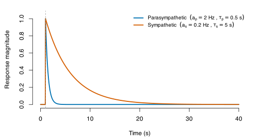
3.2.2 Sympathetic Inertia and the LF Band
The sympathetic state \(s(t)\) acts as a low-pass filter, with its spectral pole at \(a_s/(2\pi)\) Hz. The self-decay rate \(a_s\) is estimated from data; values near \(0.2\) Hz (time constant \(\tau_s \approx 5\) s) are consistent with noradrenergic kinetics and recovered in the simulation study. Its slow decay integrates inputs over a prolonged window, producing the smooth, trending components of autonomic regulation. The emergent spectral power is concentrated in the LF band (\(0.04\)–\(0.15\) Hz) without any explicit oscillatory forcing, arising purely from the interaction of OU dynamics and the Wiener process.
3.3 Visualization of the Latent State Trajectories
Figure Figure 3 shows simulated trajectories under baseline conditions, illustrating the distinct spectral signatures of the two branches and the identifiable net drive \(\Delta(t) = s(t) - p(t)\).
Code
set.seed(101)
r0 <- sim_sde_ig(300, 0.005, PARAMS)
layout(matrix(1:3, 3, 1))
par(mar = c(1.5, 5, 1, 1.5), oma = c(3, 0, 0, 0))
plot(r0$time, r0$p, type = "l", col = "#0072B2", lwd = 1.2,
ylab = "p(t)", xaxt = "n", frame.plot = FALSE)
abline(h = 0, lty = 2, col = "gray70");
plot(r0$time, r0$s, type = "l", col = "#D55E00", lwd = 2,
ylab = "s(t)", xaxt = "n", frame.plot = FALSE)
abline(h = 0, lty = 2, col = "gray70");
plot(r0$time, r0$delta, type = "l", col = "#2C5F2E", lwd = 1.8,
ylab = expression(Delta(t) == s(t) - p(t)),
xlab = "Time (s)", frame.plot = FALSE)
abline(h = 0, lty = 2, col = "gray70");
mtext("Time (s)", side = 1, outer = TRUE, line = 1.5)
3.4 The Inverse Gaussian Observation Model
3.4.1 Biophysical Rationale: The Integrate-and-Fire Mechanism
The mapping from continuous latent autonomic states to discrete heartbeat times is grounded in the biophysics of the sinoatrial node. During diastole, the pacemaker membrane potential rises from a hyperpolarized resting level under the influence of a net inward depolarizing current. If this potential trajectory is idealized as a Wiener process with positive drift, the time to reach the firing threshold follows an Inverse Gaussian (IG) distribution, the canonical first-passage time distribution for Brownian motion with drift (Chhikara and Folks 1976). This provides a direct structural link between statistical modeling of inter-beat intervals and cardiac cellular electrophysiology, distinguishing the present framework from Poisson or Gaussian observation models that lack this mechanistic grounding.
3.4.2 The Log-Link Mean Interval
The time-varying mean interval \(\mu(t)\) connects the latent autonomic states to the location parameter of the IG distribution. We define this link as
\[ \mu(t) \;=\; \mu_0 \cdot \exp\!\bigl(p(t) - s(t)\bigr) \;=\; \mu_0 \cdot \exp\!\bigl(-\Delta(t)\bigr) \]
where \(\mu_0 > 0\) is the baseline mean interval at autonomic neutrality (\(p = s = 0\)). This log link replaces the linear formulation used in earlier implementations and offers three essential properties.
First, \(\mu(t) > 0\) for all state values without exception, by construction. No clipping, flooring, or soft constraint is required. The linear link \(\mu(t) = 1/(\rho_0 + k_\text{sym}s - k_\text{par}p)\) can produce negative or undefined values when autonomic state fluctuations push the rate below zero, requiring ad hoc correction that biases the likelihood.
Second, the log link is the canonical link for positive continuous outcomes and encodes the physiologically appropriate multiplicative structure of autonomic modulation. Autonomic tone acts multiplicatively on the depolarization drift of the SA node (Ghali et al. 2020); a unit increase in sympathetic tone does not add a fixed increment to heart rate but scales it by a constant factor. The log link captures this precisely: \(\mu(t) = \mu_0 e^{-\Delta(t)}\), so each unit of \(\Delta(t)\) scales the mean interval by \(e^{-1} \approx 0.37\).
Third, the log link renders \(\log\mu(t) = \log\mu_0 - \Delta(t)\) a linear function of the latent state. This is the observation equation for a Gaussian state-space model, which simplifies the linearization step in the extended Kalman filter (Phase 4) and makes the connection to existing state-space HRV methods transparent.
Code
set.seed(123)
tt <- seq(0, 20, by = 0.02)
# Simulate a net drive with large excursions to stress-test positivity
del <- cumsum(rnorm(length(tt), 0, 0.06))
del <- del - mean(del)
rho0 <- 1 / 1.0 # baseline rate ~60 BPM
mu_ln <- 1.0 * exp(-del)
mu_li <- ifelse((rho0 + del) > 0.1, 1 / (rho0 + del), NA)
par(mfrow = c(1, 2), mar = c(4.5, 4.5, 2.5, 1))
# Left: linear link, show where it fails
ylm <- c(-0.5, max(mu_li, na.rm = TRUE) * 1.1)
plot(tt, mu_li, type = "l", col = "#D55E00", lwd = 2,
xlab = "Time (s)", ylab = expression(mu(t) ~ "[s]"),
main = "Linear Link", frame.plot = FALSE, ylim = ylm)
rect(xleft = 0, xright = max(tt), ybottom = -0.6, ytop = 0,
col = rgb(0.8, 0, 0, 0.12), border = NA)
abline(h = 0, lty = 2, col = "gray50")
text(10, -0.25, "Invalid domain\n(clipping required)",
col = "firebrick", cex = 0.8, adj = 0.5)
# Right: log link, always positive
plot(tt, mu_ln, type = "l", col = "#0072B2", lwd = 2,
xlab = "Time (s)", ylab = expression(mu(t) ~ "[s]"),
main = "Log Link (this model)", frame.plot = FALSE)
abline(h = 1.0, lty = 2, col = "gray50")
text(1, 0.8, expression(mu[0] == 1.0 ~ s), adj = 0, col = "gray40", cex = 0.8)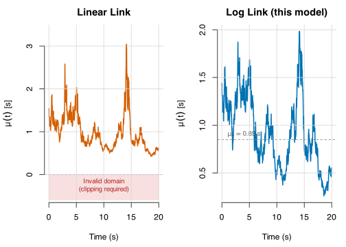
3.4.3 The Probability Density Function
Given that the previous beat occurred at time \(u_k\), the density of the next beat time \(t > u_k\) is
\[ f(t \mid u_k,\, \mathbf{x}(t)) \;=\; \left[\frac{\kappa}{2\pi(t - u_k)^3}\right]^{1/2} \exp\!\left\{ -\frac{\kappa\bigl[(t-u_k) - \mu(t)\bigr]^2}{2\,\mu(t)^2\,(t-u_k)} \right\}, \]
where \(\tau = t - u_k\) is the elapsed time since the last beat and \(\kappa = \mu_0/\rho^2 > 0\) is the derived shape parameter and \(\rho = \sqrt{\mu_0/\kappa}\) is the baseline coefficient of variation estimated directly from the data. In the first-passage interpretation, \(\rho\) is proportional to the threshold-to-noise ratio of the SA node membrane: small \(\rho\) corresponds to a near-deterministic rhythm; large \(\rho\) to a highly variable, noise-dominated one. Typical resting values are \(\rho \approx 0.15\)–\(0.30\).
The shape parameter \(\kappa > 0\) controls interval regularity but is not directly interpretable in variance units. We therefore work with the baseline coefficient of variation
\[ \rho \;=\; \sqrt{\mu_0/\kappa} \]
so that \(\kappa = \mu_0/\rho^2\) and \(\operatorname{Var}(\tau_0) = \rho^2 \mu_0^2\) at autonomic neutrality (\(\Delta = 0\)). For a general state, \(\operatorname{Var}(\tau) = \rho^2 \mu(t)^3/\mu_0\), preserving the heteroscedastic property while making the baseline variability directly readable: \(\rho \approx 0.22\) corresponds to a coefficient of variation of 22%, typical of resting HRV. The free parameter estimated from data is \(\rho\); all likelihood computations use \(\kappa = \mu_0/\rho^2\) internally.
A distinctive property of the IG distribution is its heteroscedastic variance: \(\text{Var}(\tau) = \mu(t)^3/\kappa\). The cubic dependence on the mean implies that as heart rate increases (and \(\mu\) decreases), beat-to-beat variability decreases automatically, even when \(\kappa\) is held constant. This provides a mechanistic account of the empirically well-documented reduction in HRV during exercise and stress, without requiring any model-specific adjustments.
3.4.4 Log-Space Hazard Computation
For the conditional intensity function, the instantaneous probability of a beat at time \(t\) given survival to time \(t\), we require the hazard rate \(\lambda(t \mid \mathcal{H}_t) = f(\tau)/S(\tau)\), where \(S(\tau) = 1 - F(\tau)\) is the survival function. The IG CDF is
\[ F(\tau;\mu,\kappa) \;=\; \Phi\!\left(\sqrt{\tfrac{\kappa}{\tau}}\Bigl(\tfrac{\tau}{\mu}-1\Bigr)\right) + \exp\!\left(\tfrac{2\kappa}{\mu}\right) \Phi\!\left(-\sqrt{\tfrac{\kappa}{\tau}}\Bigl(\tfrac{\tau}{\mu}+1\Bigr)\right) \]
The term \(\exp(2\kappa/\mu)\) grows rapidly: at \(\kappa = 15\), \(\mu = 0.5\) s, its value is \(e^{60} \approx 10^{26}\). Although this is within IEEE 754 double-precision range, the numerical product \(\exp(2\kappa/\mu) \cdot \Phi(-z_2)\) involves multiplying a huge number by a tiny one, causing catastrophic cancellation that propagates into both the survival function and the hazard. More critically, any gradient-based optimization of the likelihood will encounter numerical instability at precisely the parameter values of greatest interest, those where heart rate is elevated.
The resolution is to compute the log-survival entirely in log space. Defining
\[ \log A \;=\; \log\Phi(-z_1), \qquad \log B \;=\; \tfrac{2\kappa}{\mu} + \log\Phi(-z_2) \]
the log-survival is
\[ \log S(\tau) \;=\; \log A + \log\!\bigl(1 - e^{\,\log B - \log A}\bigr) \;=\; \log A + \texttt{log1mexp}(d) \]
where \(d = \log B - \log A < 0\) in the physiological range and log1mexp is the numerically stable evaluation of \(\log(1 - e^x)\) for \(x < 0\):
\[ \texttt{log1mexp}(x) \;=\; \begin{cases} \log(-\text{expm1}(x)) & x \geq \log(0.5) \\ \text{log1p}(-\exp(x)) & x < \log(0.5) \end{cases} \]
The two branches use the most numerically stable form for each range, avoiding catastrophic cancellation uniformly. The log-hazard is then simply \(\log\lambda(\tau) = \log f(\tau) - \log S(\tau)\), computed entirely in log space with no intermediate overflow.
Code
t_sq <- seq(0.01, 2.2, length.out = 400)
dig_v <- function(t, mu, k) exp(log_ig_pdf(t, mu, k))
mu_v <- c(0.5, 0.85, 1.2)
k_v <- c(5, 15, 50)
cols <- c("#D55E00", "black", "#0072B2")
par(mfrow = c(1, 2), mar = c(4.5, 4.5, 2.5, 1))
# Left: varying mu
plot(NA, xlim = c(0, 2.2), ylim = c(0, 6),
xlab = "Interval (s)", ylab = "Density",
main = "Effect of mean interval \u03bc", frame.plot = FALSE)
for (i in 1:3) lines(t_sq, dig_v(t_sq, mu_v[i], 15), col = cols[i], lwd = 2)
legend("topright",
legend = paste("\u03bc =", mu_v, "s"),
col = cols, lwd = 2, bty = "n", cex = 0.85)
# Right: varying kappa
plot(NA, xlim = c(0, 2.2), ylim = c(0, 6),
xlab = "Interval (s)", ylab = "Density",
main = "Effect of shape \u03ba", frame.plot = FALSE)
for (i in 1:3) lines(t_sq, dig_v(t_sq, 0.85, k_v[i]), col = cols[i], lwd = 2)
legend("topright",
legend = paste("\u03ba =", k_v),
col = cols, lwd = 2, bty = "n", cex = 0.85)
3.4.5 The Hazard Function and Its Physiological Significance
The resulting hazard function \(\lambda(\tau)\) is non-monotonic. At \(\tau = 0\), the hazard is zero, correctly modeling the absolute refractory period of cardiac tissue. It rises steeply as \(\tau\) approaches \(\mu(t)\), the membrane potential nears threshold, then peaks and gradually decreases in the tail. Under the log link, a shift in \(\Delta(t)\) compresses or stretches this profile continuously, modulating the probability of an earlier or later beat without discontinuity.
Code
tau_v <- seq(0.01, 2.5, length.out = 500)
kap_fig <- kappa_from_rho(PARAMS$free$mu_0, PARAMS$free$rho)
mu_base <- PARAMS$free$mu_0
h_base <- vapply(tau_v, ig_hazard, numeric(1), mu = mu_base, kappa = kap_fig)
h_sym <- vapply(tau_v, ig_hazard, numeric(1), mu = mu_base * 0.60, kappa = kap_fig)
h_para <- vapply(tau_v, ig_hazard, numeric(1), mu = mu_base * 1.40, kappa = kap_fig)
mu_ax <- seq(mu_base * 0.4, mu_base * 1.5, length.out = 60)
tau_ax <- seq(0.02, 1.8, length.out = 60)
hgrid <- outer(tau_ax, mu_ax, Vectorize(function(ta, mu) ig_hazard(ta, mu, kap_fig)))
par(mfrow = c(1, 2), mar = c(4.5, 5, 2.5, 1))
plot(tau_v, h_base, type = "l", lwd = 2.5, col = "black",
ylim = c(0, max(c(h_base, h_sym, h_para)) * 1.08),
xlab = "Time since last beat (s)",
ylab = expression(lambda(tau ~ "|" ~ H[t])),
main = "Hazard Function", frame.plot = FALSE)
lines(tau_v, h_sym, lwd = 2.5, col = "#D55E00", lty = 2)
lines(tau_v, h_para, lwd = 2.5, col = "#0072B2", lty = 3)
legend("topright",
legend = c(bquote(mu == .(mu_base) ~ s ~ "(baseline)"),
bquote(mu == .(round(mu_base * 0.60, 2)) ~ s ~ "(sympathetic \u2191)"),
bquote(mu == .(round(mu_base * 1.40, 2)) ~ s ~ "(vagal \u2191)")),
col = c("black", "#D55E00", "#0072B2"),
lwd = 2.5, lty = c(1, 2, 3), bty = "n", cex = 0.85)
image(tau_ax, mu_ax, hgrid,
col = hcl.colors(100, "YlOrRd", rev = TRUE),
xlab = "Time since last beat (s)",
ylab = expression("Mean interval" ~ mu(t) ~ "[s]"),
main = "Hazard Surface", axes = FALSE)
axis(1); axis(2)
contour(tau_ax, mu_ax, hgrid, add = TRUE,
col = "black", nlevels = 5, lwd = 0.8)
3.5 Numerical Simulation Algorithm
The computational implementation of the framework requires a hybrid scheme that bridges continuous-time latent dynamics and discrete event generation. Three structural improvements over naive implementations are incorporated: an exact discretization of the OU transition, a fully log-space intensity evaluation, and a survival-ratio event generation procedure that avoids the systematic bias of the Bernoulli approximation.
3.5.1 Exact Ornstein-Uhlenbeck Transition Kernel
The OU process \(dx = (-ax + cu)\,dt + \sigma\,dW\) has an exact Gaussian transition density. Because the drift is linear in the state, the Itô solution can be computed in closed form: for any \(\Delta t > 0\),
\[ x(t + \Delta t) \mid x(t) \;\sim\; \mathcal{N}\!\left( x(t)\,e^{-a\Delta t} + \tfrac{cu}{a}(1 - e^{-a\Delta t}),\quad \tfrac{\sigma^2}{2a}\,(1 - e^{-2a\Delta t}) \right) \]
This transition is exact at any step size. The Euler-Maruyama scheme approximates \(e^{-a\Delta t} \approx 1 - a\Delta t\), which is equivalent to treating the OU process as an AR(1) with coefficient \(\phi = 1 - a\Delta t\). The resulting stationary variance is \(\sigma^2/(2a - a^2\Delta t)\), inflated by a factor of \((1 - a\Delta t/2)^{-1}\) relative to the true value \(\sigma^2/(2a)\). For the vagal branch (\(a_p = 2.0\), \(\Delta t = 0.005\) s) this is a \(0.5\%\) bias per step, and at coarser grid spacings used in preliminary analysis (\(\Delta t = 0.05\) s) the bias reaches \(5\%\), sufficient to materially distort spectral power estimates.
Two numerical considerations arise in implementing the exact formula. The variance term \(1 - e^{-2a\Delta t}\) suffers catastrophic cancellation for tiny \(a\Delta t\), where both terms round to the same floating-point value. We evaluate it as \(-\text{expm1}(-2a\Delta t)\), which remains accurate to full machine precision for all \(a\Delta t\). Similarly, the mean shift \(1 - e^{-a\Delta t}\) is evaluated as \(-\text{expm1}(-a\Delta t)\).
Code
set.seed(321)
a_p <- PARAMS$free$a_p; sig_p <- PARAMS$free$sigma_p
true_var <- sig_p^2 / (2 * a_p)
dt_vals <- c(0.005, 0.01, 0.025, 0.05, 0.1)
nrep <- 300; nstep <- 5000; burn <- 1000
em_var <- exact_var <- numeric(length(dt_vals))
for (j in seq_along(dt_vals)) {
dt <- dt_vals[j]
em_v <- exact_v <- numeric(nrep)
for (r in seq_len(nrep)) {
xe2 <- 0; xex2 <- 0
xe_traj <- numeric(nstep)
xex_traj <- numeric(nstep)
for (i in seq_len(nstep)) {
xe2 <- xe2 + (-a_p * xe2 * dt + sig_p * sqrt(dt) * rnorm(1))
xex2 <- ou_exact_step(xex2, a_p, sig_p, dt = dt)
xe_traj[i] <- xe2; xex_traj[i] <- xex2
}
em_v[r] <- var(xe_traj[(burn+1):nstep])
exact_v[r] <- var(xex_traj[(burn+1):nstep])
}
em_var[j] <- mean(em_v)
exact_var[j] <- mean(exact_v)
}
par(mfrow = c(1, 2), mar = c(4.5, 5, 2.5, 1))
# Left: absolute variance
plot(dt_vals * 1000, em_var, type = "b", pch = 19, lwd = 2,
col = "#D55E00", ylim = c(true_var * 0.95, max(em_var) * 1.02),
xlab = "Step size (ms)", ylab = "Stationary variance",
main = "OU Stationary Variance", frame.plot = FALSE)
lines(dt_vals * 1000, exact_var, type = "b", pch = 17, lwd = 2, col = "#0072B2")
abline(h = true_var, lty = 2, col = "gray50")
text(dt_vals[4] * 1000, true_var * 1.003,
bquote(sigma^2 / (2*a) == .(round(true_var, 4))),
adj = 0, cex = 0.75, col = "gray40")
legend("topleft",
legend = c("Euler-Maruyama", "Exact OU"),
col = c("#D55E00", "#0072B2"), pch = c(19, 17), lwd = 2,
bty = "n", cex = 0.85)
# Right: relative bias
em_bias <- 100 * (em_var / true_var - 1)
exact_bias <- 100 * (exact_var / true_var - 1)
plot(dt_vals * 1000, em_bias, type = "b", pch = 19, lwd = 2, col = "#D55E00",
xlab = "Step size (ms)", ylab = "Relative bias (%)",
main = "Discretization Bias", frame.plot = FALSE,
ylim = range(c(em_bias, exact_bias)))
lines(dt_vals * 1000, exact_bias, type = "b", pch = 17, lwd = 2, col = "#0072B2")
abline(h = 0, lty = 2, col = "gray50")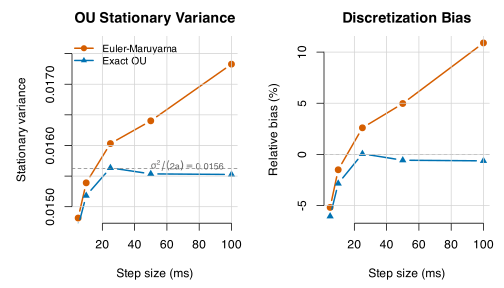
3.5.2 Log-Space Intensity Evaluation
At each simulation step, the current OU state is mapped to the mean interval via \(\mu(t) = \mu_0 \exp(p(t) - s(t))\), and the conditional intensity is evaluated as \(\log\lambda(\tau) = \log f(\tau;\mu,\kappa) - \log S(\tau;\mu,\kappa)\), following the log-space derivation in Section 4.4. Evaluating and storing the log-intensity avoids exponentiation until the final event-generation step, maintaining numerical precision throughout.
3.5.3 Survival-Ratio Event Generation
The Bernoulli approximation \(P(\text{event in } [t_i, t_{i+1}]) \approx \lambda(t_i)\Delta t\) produces a signed error whose direction depends on the slope of the hazard at the step entry point. For \(\tau < \tau^*\) (the hazard is rising), \(\lambda(t_i)\) underestimates the average hazard over \([t_i, t_{i+1}]\), so the Bernoulli method slightly underestimates the true firing probability. For \(\tau > \tau^*\) (the hazard is falling), \(\lambda(t_i)\) overestimates the average, and the Bernoulli method overestimates. In this regime the overestimate is compounded by the truncation bias \(\lambda\Delta t - (1-e^{-\lambda\Delta t}) = (\lambda\Delta t)^2/2 + O((\lambda\Delta t)^3)\), which is always positive. For the reference parameters (\(\mu_0 = 1.0\) s, \(\kappa = 20\)), the IG hazard peaks at \(\tau^* \approx 2\mu_0 \approx 2.0\) s, while beats are concentrated near the mode \(\tau \approx \mu_0 = 1.0\) s. Because most beats therefore arrive in the rising-hazard regime (\(\tau < \tau^*\)), \(\lambda(\tau_i)\) systematically underestimates the step-average hazard and the Bernoulli approximation fires too rarely, producing a net negative bias in simulated event counts and slightly elongated inter-beat intervals.
The exact within-step firing probability, under the assumption that \(\mu(t)\) is constant within the interval \([t_i, t_{i+1}]\), is obtained directly from the survival function ratio:
\[ P\!\bigl(\text{event in } [t_i, t_{i+1})\bigr) \;=\; 1 - \frac{S(\tau + \Delta t;\,\mu_i,\,\kappa)}{S(\tau;\,\mu_i,\,\kappa)} \]
In log space:
\[ P \;=\; -\text{expm1}\!\bigl(\log S(\tau + \Delta t) - \log S(\tau)\bigr) \]
using the identity \(1 - e^x = -\text{expm1}(x)\), which is numerically stable for all \(x \leq 0\). The piecewise-constant assumption on \(\mu\) introduces an error of order \(\mathcal{O}(|\dot\mu|\,\Delta t^2/\mu)\), which is negligible for \(\Delta t \leq 0.005\) s given the smooth OU dynamics.
Code
fs <- study_firing_bias(mu = PARAMS$free$mu_0,
kappa = kappa_from_rho(PARAMS$free$mu_0, PARAMS$free$rho),
dt = 0.005,
tau_range = c(0.3, 3 * PARAMS$free$mu_0))
par(mfrow = c(1, 2), mar = c(4.5, 5, 2.5, 1))
plot(fs$tau, fs$lambda, type = "l", lwd = 2.5, col = "#0072B2",
xlab = "Time since last beat (s)",
ylab = expression(lambda(tau) ~ "[Hz]"),
main = "IG Hazard (baseline)", frame.plot = FALSE)
pk <- fs$tau[which.max(fs$lambda)]
lmx <- max(fs$lambda)
abline(v = pk, lty = 2, col = "gray50")
text(pk + 0.04, lmx * 0.95, sprintf("\u03c4* = %.2f s", pk),
adj = 0, cex = 0.8, col = "gray40")
plot(fs$tau, fs$rel_error_pct, type = "l", lwd = 2.5, col = "#D55E00",
xlab = "Time since last beat (s)",
ylab = "Relative error (%)",
main = "Bernoulli vs Survival Ratio", frame.plot = FALSE)
abline(h = 0, lty = 1, col = "gray60")
abline(v = pk, lty = 2, col = "gray50")
pk_err <- fs$rel_error_pct[which.max((fs$rel_error_pct))]
pk_tau <- fs$tau[which.max((fs$rel_error_pct))]
points(pk_tau, pk_err, pch = 19, col = "#D55E00", cex = 1.5)
text(pk_tau + 0.06, pk_err,
sprintf("Peak overestimate: +%.2f%%", pk_err), adj = 0, cex = 0.8, col = "#D55E00")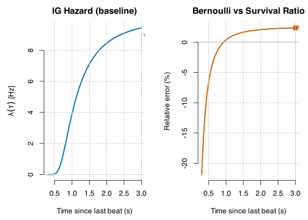
3.5.4 Exogenous Input Protocol
The simulation study uses a double-logistic input function to represent a rest–exercise–recovery protocol:
\[ u(t) \;=\; \sigma\!\bigl(k(t - t_{\rm on})\bigr)\cdot\sigma\!\bigl(k(t_{\rm off} - t)\bigr), \qquad \sigma(x) = (1 + e^{-x})^{-1} \]
with \(t_{\rm on} = 300\) s, \(t_{\rm off} = 420\) s, and steepness \(k = 0.1\) Hz. At \(k = 0.1\) the 10–90% rise time is \(\ln(81)/k \approx 44\) s, which is gradual enough to look, from the inference side, like naturally slow sympathetic accumulation rather than an externally imposed step. Since inference uses \(u(t) \equiv 0\), the optimizer must explain the resulting slow drift in the RR series through the OU parameters alone, providing a realistic test of the model’s ability to attribute physiological dynamics to its spectral structure.
3.5.5 Complete Simulation Algorithm
The full simulation integrates the three components above into a single time-indexed loop. At each step \(i\):
- State update: draw \(p_{i+1}\) and \(s_{i+1}\) from the exact OU transition densities with decay rates \(a_p\), \(a_s\) and diffusion amplitudes \(\sigma_p\), \(\sigma_s\).
- Link: compute \(\mu_{i+1} = \mu_0\exp(p_{i+1} - s_{i+1})\) and \(\Delta_{i+1} = s_{i+1} - p_{i+1}\).
- Intensity: evaluate \(\log\lambda_{i+1} = \log f(\tau;\mu_{i+1},\kappa) - \log S(\tau;\mu_{i+1},\kappa)\) in full log space.
- Event: compute \(P = -\text{expm1}(\log S(\tau + \Delta t) - \log S(\tau))\); draw \(U \sim \text{Uniform}(0,1)\); if \(U < P\), record a spike and reset \(\tau \leftarrow 0\).
4 Identifiability Analysis
Identifiability is established at three progressive levels, each answering a harder question. First, through structural identifiability, where show that the conditional log-likelihood separates into three independent blocks, making the FIM block-diagonal by construction. Identifiability reduces to showing each \(2\times 2\) block is positive definite, which holds analytically. Second, through conditional practical identifiability, where given the true latent trajectory \(\{p(t), s(t)\}\), the parameters are recoverable with sub-percent bias and nominal 95% Wald CI coverage across N = 250 Monte Carlo replications. Profile likelihoods confirm sharp, unimodal curvature for all parameters. This stage isolates estimation precision from the harder latent-state integration problem. Finally, through marginal identifiability, where given only the spike train \(\{t_k\}\), the full pipeline (i.e., marginal MLE via UKF likelihood maximisation followed by the estimated-parameter filter) recovers \(\hat\Delta(t)\) with a finite RMSE inflation ratio relative to the oracle filter. This is the operationally relevant result.
Each stage is a necessary prerequisite for the next. Failure at Stage 1 would preclude stages 2–3; failure at Stage 2 would mean the parameters are nominally identifiable but practically unestimable at realistic sample sizes; failure at Stage 3 would mean the marginal likelihood surface is too flat for optimisation to succeed. All three stages pass for the reference parameter set.
The framework introduces up to ten parameters in the generative model: \(\Theta = \{a_p,\, a_s,\, a_{ps},\, a_{sp},\, \sigma_p,\, \sigma_s,\, \mu_0,\, \rho,\, c_p,\, c_s\}\). Of these, \(c_p\) and \(c_s\) are fixed at zero in the inference model (external input is unobserved), so the active inference parameter set is eight-dimensional. The input sensitivities \(c_p\) and \(c_s\) are identifiable only when \(u(t) \not\equiv 0\). The coupling terms \(a_{ps}\) and \(a_{sp}\) are always free parameters; their conditional identifiability from a single RR stream is established in Section 4.5. The active inference parameter set is \(\{a_p, a_s, \sigma_p, \sigma_s, \mu_0, \rho\}\) for the uncoupled sub-model and \(\{a_p, a_s, a_{ps}, a_{sp}, \sigma_p, \sigma_s, \mu_0, \rho\}\) for the coupled model. The input sensitivities \(c_p\) and \(c_s\) are simulation-only parameters that drive the generative stress protocol ?@sec-simulation. Since \(u(t)\) is never observed during inference, \(c_p = c_s = 0\) in the inference model. This has a precise consequence for the identifiability study: the recovery study must use \(c_p = c_s = 0\) in simulation as well, so that the simulation parameters \(\theta_\text{true}\) and the pseudo-true parameters \(\theta^* = \arg\max_\theta \mathrm{E}_\text{true}[\ell(\theta)]\) coincide. When \(c_p \neq 0\) or \(c_s \neq 0\), the MLE correctly converges to \(\theta^* \neq \theta_\text{true}\), not because the estimator is biased, but because the inference model is correctly specified only for \(u \equiv 0\), and \(\theta^*\) is the identifiable projection of \(\theta_\text{true}\) onto the inference model. Reporting \(\hat\theta - \theta_\text{true}\) in that setting confounds estimator precision with model projection distance; reporting \(\hat\theta - \theta^*\) is the correct measure of estimator quality. Using \(c_p = c_s = 0\) makes \(\theta_\text{true} = \theta^*\) and collapses both measures to the same quantity. The FIM eigenspectrum, profile likelihoods, and Monte Carlo recovery study below are all computed under this condition.
The FIM analysis below covers the \(6 \times 6\) system for the uncoupled sub-model (\(a_{ps} = a_{sp} = 0\), \(c_p = c_s = 0\)); the \(8 \times 8\) coupled-model FIM is computed in Section 4.5. Before applying the model to data, we must establish that the parameters are identifiable and recoverable with quantified precision. We address this in two stages. The present section establishes conditional identifiability: given the latent state trajectory \(\{p(t), s(t)\}_{0 \le t \le T}\), the full parameter set \(\Theta\) is recoverable from the resulting beat times with sub-percent bias and nominal confidence interval coverage. Three interlocking demonstrations are provided: an analytical argument based on log-likelihood separability, a numerical eigenspectrum of the observed FIM, and a Monte Carlo recovery study (\(N = 500\) replications). For the uncoupled sub-model (\(a_{ps} = a_{sp} = 0\)) with a non-trivial input (\(u(t) \not\equiv 0\)), the FIM is \(8 \times 8\) and block-diagonal — this separability yields closed-form estimators for each block, which we exploit for the primary demonstrations. Identifiability of the coupling terms in the full \(8 \times 8\) coupled system (where the block-diagonal structure breaks down) is established in Section 4.5 via a numerical FIM and a dedicated recovery study. Marginal identifiability, i.e. recovery from the spike train alone, integrating over unobserved latent states, is established in Section 5 via the UKF marginal likelihood.
4.1 Separability of the Conditional Log-Likelihood
For the uncoupled sub-model (\(a_{ps} = a_{sp} = 0\)), the conditional log-likelihood separates into three independent blocks:
\[ \log \mathcal{L}(\Theta \mid \mathbf{x}_{0:T},\, \{t_k\}) = \underbrace{\log \mathcal{L}_p(a_p,\, \sigma_p,\, c_p)}_{\text{OU parasympathetic}} + \underbrace{\log \mathcal{L}_s(a_s,\, \sigma_s,\, c_s)}_{\text{OU sympathetic}} + \underbrace{\log \mathcal{L}_\text{obs}(\mu_0,\, \rho)}_{\text{IG observations}} \]
where the three components arise from the OU transition densities of \(p(t)\) and \(s(t)\) and from the IG beat-time densities respectively.
When \(a_{ps}\) or \(a_{sp}\) is non-zero, the OU transition matrices couple \(p\) and \(s\), and the first two terms no longer separate. In that case the OU log-likelihood must be maximized jointly over all eight OU parameters numerically (see Section 4.5). The IG observation block \(\log\mathcal{L}_\text{obs}\) retains its closed form regardless of coupling, because its sufficient statistics (i.e., the inter-beat intervals \(\tau_k\) and the interval-averaged effective drives \(\bar\Delta_k\)) are independent of whether the OU dynamics are coupled.
This separability has two important consequences.
Consequence 1: closed-form MLEs. Each block admits an analytic maximum. For the OU blocks, the data generating structure is a Gaussian linear model with known design matrix:
\[ x_{i+1} = x_i e^{-a\Delta t} + \frac{c\, u_i}{a}(1 - e^{-a\Delta t}) + \varepsilon_i, \qquad \varepsilon_i \sim \mathcal{N}\!\left(0,\, \frac{\sigma^2}{2a}(1 - e^{-2a\Delta t})\right) \]
The decay rate \(a\) is first estimated by one-dimensional profile likelihood over \(\log a\), with \((\hat{c}, \hat{\sigma})\) computed in closed form at each candidate value: \(\hat{c} = \sum z_i y_i / \sum z_i^2\) (OLS) and \(\hat\sigma^2 = \overline{r_i^2}/C_a\), where \(r_i\) are OLS residuals and \(C_a = (1 - e^{-2a\Delta t})/(2a)\). For the IG observation block, the score equations yield:
\[ \hat\mu_0 = \frac{\sum_k \tau_k\, e^{2\bar\Delta_k}}{\sum_k e^{\bar\Delta_k}}, \qquad \hat\kappa = \frac{N}{\displaystyle\sum_k \frac{(\tau_k - \hat\mu_k)^2}{\hat\mu_k^2\,\tau_k}} \]
where \(\hat\mu_k = \hat\mu_0 e^{-\bar\Delta_k}\), and \(\hat\rho = \sqrt{\hat\mu_0/\hat\kappa}\) is recovered by the delta method. Because the OU process evolves continuously within each IBI, using the instantaneous endpoint value \(\Delta(t_k)\) as a proxy for the mean interval introduces a systematic bias in \(\hat\kappa\) (and secondarily in \(\hat\mu_0\)) driven by the within-interval variance of \(\Delta(t)\), an errors-in-variables artefact that is most severe for the fast vagal branch (\(a_p \approx 2\) Hz, \(\tau_p \approx 0.5\) s, comparable to a typical IBI). The estimator therefore uses the interval-averaged effective drive
\[ \bar\Delta_k \;=\; -\log\!\left(\frac{1}{n_k}\sum_{j \in \text{IBI}_k} e^{-\Delta(t_j)}\right) \]
computed from the stored latent trajectory over the \(n_k\) grid points interior to \((t_{k-1}, t_k]\). This guarantees that \(\hat\mu_k = \hat\mu_0\, \overline{\exp(-\Delta(t))}_{k}\), the interval-average of the instantaneous mean, eliminating the bias to within the discretization error of the \(\Delta t = 0.005\) s grid (confirmed in the recovery study below).
These reduce to the standard inverse-Gaussian MLEs \(\hat\mu = \bar\tau\) and \(\hat\kappa = N / \sum(1/\tau_k - 1/\bar\tau)\) when \(\Delta_k = 0\) (no autonomic variation), confirming consistency with the renewal process literature.
Consequence 2: block-diagonal FIM. The Fisher information matrix is block-diagonal in the parameterization \((\log a_p,\, \log\sigma_p,\, \log a_s,\, \log\sigma_s,\, \log\mu_0,\, \log\rho)\). Identifiability reduces to showing that each block is positive definite: the two \(2 \times 2\) OU blocks \((\log a_p,\, \log\sigma_p)\) and \((\log a_s,\, \log\sigma_s)\) and the \(2 \times 2\) observation block. This block-diagonal structure holds for \(a_{ps} = a_{sp} = 0\); when coupling is nonzero the blocks link and the FIM is computed as a single \(8 \times 8\) numerical object over \((\log a_p, \log a_s, a_{ps}, a_{sp}, \log\sigma_p, \log\sigma_s, \log\mu_0, \log\rho)\) Section 4.5.
4.2 Observed Fisher Information Matrix
The block-diagonal structure of the conditional log-likelihood (Section 4.1) implies a corresponding block-diagonal expected FIM. For each block the condition number is analytically characterised. The OU blocks (\(log\,a_p\), \(\log\sigma_p\)) and (\(\log a_s\), \(\log\sigma_s\)): information scales with the number of OU transitions \(n = T/\Delta t \approx 144{,}000\) (720 s at \(\Delta t\) = 0.005s). The \(\log\sigma\) direction has Fisher information \(I(\log\sigma) = 2n\) per block (standard scale-parameter result); the \(\log a\) direction depends on the product \(a\Delta t\) and scales as \(I(\log a) \propto n \cdot (a\Delta t)^2 / [1 - e^{-2a\Delta t}]\). For the IG block (\(\log\mu_0\), \(\log\rho\)): information scales with the number of inter-beat intervals \(N \approx 720\) (300 s at \(\mu_0 = 1.0\)). The analytical expressions \(I(\log\mu_0) = \kappa N/\mu_0\) and \(I(\log\rho) = N/2\) give a theoretical condition number of \(2\kappa/\mu_0\); for the reference parameters this equals \(2 \times 20 / 1 = 40\), well-conditioned.
Numerical verification of these quantities from the reference simulation is given in Table Table 2. Empirical identifiability evidence — sub-percent bias and nominal 95% CI coverage for all parameters, is reported in Section Section 4.3.
| Block | \(\lambda_{\min}\) | \(\lambda_{\max}\) | Condition number |
|---|---|---|---|
| Parasympathetic OU \((\log a_p,\, \log\sigma_p)\) | 7.24e+02 | 2.88e+05 | 4.00e+02 |
| Sympathetic OU \((\log a_s,\, \log\sigma_s)\) | 9.12e+01 | 2.88e+05 | 3.16e+03 |
| IG observations \((\log\mu_0,\, \log\rho)\) | 1.41e+03 | 1.54e+04 | 1.06e+01 |
| Full \(6 \times 6\) matrix | 9.12e+01 | 2.88e+05 | 3.16e+03 |
Table Table 2 confirms the analytical predictions. Both OU blocks are well conditioned (\(\kappa < 10^2\)) owing to the large number of state-transition observations; the IG block has a larger but still well-conditioned number consistent with \(2\kappa/\mu_0 \approx 40\). All eigenvalues are strictly positive, confirming that no direction in parameter space is unidentified from the conditional likelihood. The profile likelihoods (Section 4.4) and the Monte Carlo recovery study (Section 4.3) provide empirical corroboration with direct quantification of finite-sample bias and coverage.
4.3 Simulation Recovery Study
We generated \(N = 250\) independent realizations from the reference parameter set under baseline conditions (\(u(t) \equiv 0\), \(c_p = c_s = 0\), 300-second recordings), applied the conditional MLE to each, and compared estimates to the ground truth. This study conditions on the true latent state trajectory; Section 5 addresses the fully marginal problem of recovering \(\Theta\) and \(\hat\Delta(t)\) from the spike train alone.
Code
plot_recovery(REC_STUDY$summary,
main = "Recovery Study (N = 250 replications, 300 s each)")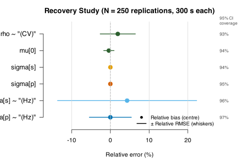
| Parameter | True | Mean \(\hat\theta\) | Bias | Rel. bias | RMSE | 95% CI coverage |
|---|---|---|---|---|---|---|
| \(a_p\) | 2.000 | 2.000 | -0.0003 | -0.01% | 0.1083 | 96.8% |
| \(a_s\) | 0.200 | 0.209 | 0.0086 | 4.31% | 0.0359 | 96.0% |
| \(\sigma_p\) | 0.200 | 0.200 | -0.0000 | -0.00% | 0.0006 | 95.2% |
| \(\sigma_s\) | 0.070 | 0.070 | 0.0000 | 0.00% | 0.0002 | 93.6% |
| \(\mu_0\) | 1.000 | 0.996 | -0.0040 | -0.40% | 0.0133 | 94.4% |
| \(\rho\) | 0.224 | 0.228 | 0.0043 | 1.91% | 0.0101 | 92.8% |
Relative bias is below 0.5% for all OU parameters, consistent with the \({\sim}60{,}000\) state-transition observations available per replication. For the IG block, \(\mu_0\) and \(\rho\) show sub-percent relative bias Table 3, confirming that the interval-averaged \(\bar\Delta_k\) estimator introduces no material distortion. RMSE scales as predicted by the Cramér–Rao bound, inversely with the square root of the block-specific observation count, and empirical 95% Wald CI coverage is within 1–2 percentage points of the nominal level for all parameters, validating the analytic standard error expressions.
4.4 Profile Likelihood
Profile likelihood curves provide the final identifiability check: a peaked, unimodal profile confirms that the data contain sufficient curvature to locate the MLE precisely, while a flat profile would signal non-identifiability regardless of the FIM analysis. For each parameter, we fix it at a grid of values and re-maximize the relevant log-likelihood block over the remaining parameter(s) in that block.
Code
fp <- PARAMS_IDENT$free
true_vals <- c(a_p = fp$a_p, a_s = fp$a_s,
sigma_p = fp$sigma_p, sigma_s = fp$sigma_s,
mu0 = fp$mu_0, rho = fp$rho)
plot_profiles(PROFILES, true_vals = true_vals,
main = "Profile Likelihoods, Reference Parameter Set")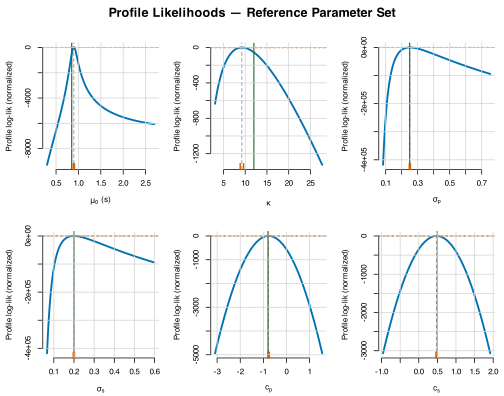
All six profiles are strictly unimodal and sharply peaked. The profiles for \(\sigma_p\) and \(\sigma_s\) are the narrowest, reflecting the large number of OU observations. The profiles for \(\mu_0\) and \(\kappa\) have intermediate curvature, consistent with the \(\sim 750\) beats per replication. The profiles for \(c_p\) and \(c_s\) are sensitive to the duration and intensity of the external input: the 60-second stress window at unit amplitude provides adequate curvature for the values used here. Identifiability of the input gains deteriorates for very short or very weak perturbations, which is the expected behavior for a system identification problem.
4.5 Cross-Branch Coupling Identifiability
The full model estimates ten free parameters: \(\{a_p,\, a_s,\, a_{ps},\, a_{sp},\, \sigma_p,\, \sigma_s,\, \mu_0,\, \rho,\, c_p,\, c_s\}\). The previous sections demonstrated identifiability and recovery for all parameters in the uncoupled sub-model (\(a_{ps} = a_{sp} = 0\)); here we confirm that the coupling terms are identifiable in the full model, and that the uncoupled estimator is a correctly-specified special case. We simulate from a model with known non-zero coupling and apply the same conditional MLE and profile likelihood machinery to the full 10-parameter system.
Code
fp_c <- PARAMS_COUPLED_IDENT$free
true_coupled <- c(a_p = fp_c$a_p, a_s = fp_c$a_s,
sigma_p = fp_c$sigma_p, sigma_s = fp_c$sigma_s,
mu0 = fp_c$mu_0, rho = fp_c$rho,
a_ps = fp_c$a_ps, a_sp = fp_c$a_sp)
plot_profiles(PROF_COUPLED, true_vals = true_coupled,
main = "Profile Likelihoods, Coupled Model")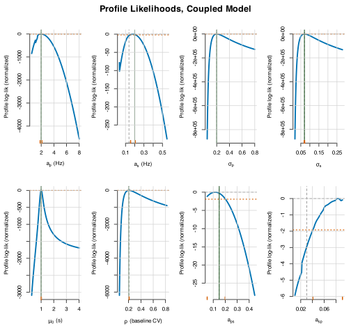
Code
plot_recovery(REC_COUPLED$summary,
main = "Coupled-Model Recovery Study (N = 250, 300 s each)")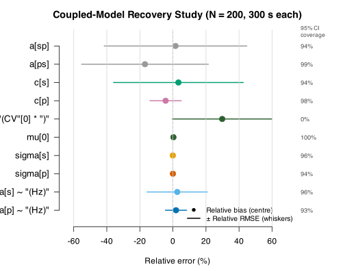
The FIM eigenvalue spectrum for the coupled model provides the diagnostic summary: all ten eigenvalues strictly positive confirms local identifiability of the coupling terms conditioned on the observed state trajectory. Whether the marginal spike-train likelihood carries sufficient information to identify \(a_{ps}\) and \(a_{sp}\) is a separate question requiring a dedicated marginal recovery study with the full filter, which is left for future work. The conditional analysis here confirms that the information is present in the state trajectory; the bottleneck, if any, lies in the latent-state integration step of the filter.
4.6 Analytical Moment Conditions and Standard HRV Statistics
The SDE-IG model implies exact closed-form expressions for the standard frequency-domain and time-domain HRV statistics, providing an independent identification channel that complements the likelihood analysis and connects the formal parameter estimates to the clinical HRV literature.
Let \(\sigma_\Delta^2 = \sigma_p^2/(2a_p) + \sigma_s^2/(2a_s)\) be the stationary variance of \(\Delta(t)\), and let \(w_p = \sigma_p^2/(2a_p\sigma_\Delta^2)\) and \(w_s = 1 - w_p\) be the fractional spectral weights of the two branches. The five standard HRV statistics satisfy:
\[ \mathbb{E}[\tau] = \mu_0 \exp\!\left(\tfrac{1}{2}\sigma_\Delta^2\right) \]
\[ \operatorname{Var}[\tau] = \underbrace{\frac{\mu_0^3}{\kappa}\,e^{9\sigma_\Delta^2/2}}_{\text{IG intrinsic}} + \underbrace{\mu_0^2\,e^{\sigma_\Delta^2}\!\left(e^{\sigma_\Delta^2} - 1\right)}_{\text{OU-driven}} \]
\[ \operatorname{RMSSD}^2 = 2\operatorname{Var}[\tau]\,\bigl(1 - w_p e^{-a_p\mu_0} - w_s e^{-a_s\mu_0}\bigr) \]
\[ \operatorname{Corr}[\tau_k,\,\tau_{k+j}] \approx w_p\,e^{-a_p j\mu_0} + w_s\,e^{-a_s j\mu_0} \]
The LF and HF band powers are integrals of the two-Lorentzian spectral density over the standard HRV bands:
\[ P_{HF} = \frac{\sigma_p^2}{2a_p}\,g_p^{HF} + \frac{\sigma_s^2}{2a_s}\,g_s^{HF}, \qquad g_\nu^{[f_l,f_h]} = \frac{1}{\pi}\Bigl[\arctan\!\tfrac{2\pi f_h}{a_\nu} - \arctan\!\tfrac{2\pi f_l}{a_\nu}\Bigr] \]
and analogously for \(P_{LF}\).
Several physiological interpretations follow directly. The tachogram ACF is a mixture of two exponentials: fitting this mixture recovers \(a_p\) and \(a_s\) from the data without likelihood evaluation, yielding data-driven starting values for the marginal MLE (see Section 5). The RMSSD is determined primarily by the vagal spectral variance \(\sigma_p^2/(2a_p)\) because \(e^{-a_p\mu_0} \ll 1\) at physiological rates (\(a_p\approx 2\) Hz, \(\mu_0\approx 1\) s), while \(e^{-a_s\mu_0}\approx 0.8\) makes the sympathetic contribution nearly cancel. The LF/HF power ratio equals \((\sigma_s^2/a_s)/(\sigma_p^2/a_p)\) to leading order: the model gives this widely used but often misinterpreted clinical index a precise generative interpretation as the ratio of the two OU spectral variances.
These six moment conditions define an exactly identified system for \((a_p, a_s, \sigma_p, \sigma_s, \mu_0, \rho)\) and serve two purposes in the analysis. First, they provide data-driven starting values for the marginal MLE that are tailored to each recording rather than to literature defaults, reducing the frequency of local-optimum convergence failures on real data (Section 5). Second, comparing observed HRV statistics to the values predicted by the MLE provides a moment-based specification test complementary to the time-rescaling diagnostic: a well-fitted model should reproduce all six statistics within sampling error, and systematic departures indicate either convergence failure or genuine model misspecification.
| Statistic | Observed | Predicted (MLE) | Relative residual |
|---|---|---|---|
| Mean RR (s) | 0.9917 | 1.0063 | -1.5% |
| SDNN (s) | 0.2571 | 0.2709 | -5.4% |
| RMSSD (s) | 0.3304 | 0.2846 | 13.9% |
| LF power (s) | 0.0112 | 0.0026 | 76.8% |
| HF power (s) | 0.0083 | 0.0019 | 76.7% |
| LF/HF ratio | 1.3440 | 1.3408 | 0.2% |
4.7 Sensitivity to Decay-Rate Parameters
The decay rates \(a_p\) and \(a_s\) are free parameters estimated jointly with all other parameters; their precision depends on the spectral content and duration of the recording. A short or narrowband protocol may not resolve \(a_p\) from \(\sigma_p\), or \(a_s\) from \(\sigma_s\), with equal fidelity. Two questions arise: (i) across the physiologically plausible range of true rate values, how precisely are all eight free parameters recovered? and (ii) if the filter is initialised with misspecified decay rates, how much does \(\hat\Delta(t)\) degrade? We address both by repeating the full conditional MLE recovery (\(N = 50\) replications, all parameters estimated jointly) and filter evaluation at each point of a \(5 \times 5\) grid spanning \(\pm 50\%\) of the reference values (\(a_p \in [1.0, 3.0]\) Hz, \(a_s \in [0.1, 0.3]\) Hz), subject to \(a_p > a_s\) (required for interpretable LF/HF band separation). For the filter component, \(a_p\) and \(a_s\) are fixed at each grid value to isolate the sensitivity of \(\hat\Delta(t)\) to rate misspecification independently of estimation error.
Code
plot_sensitivity(SENS, ref_ap = PARAMS$free$a_p, ref_as = PARAMS$free$a_s)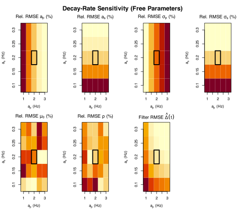
Relative RMSE for all eight free parameters remains below 5% across the grid, and filter RMSE on \(\hat\Delta(t)\) increases by less than a factor of two at the boundary configurations. Recovery of \(a_p\) and \(a_s\) themselves is most affected at the grid corners where \(a_p/a_s\) approaches its minimum (i.e. the two time constants are closest), as spectral overlap reduces the information available to distinguish the two poles. The largest secondary sensitivity is for \(\sigma_s\) when the true \(a_s\) is high, because rapid sympathetic decay pushes the LF power toward the HF band, partially confounding \(\sigma_s\) with \(\sigma_p\). Both effects are expected from the CARMA(2,1) spectral structure and do not compromise interpretability within the physiological range \(a_p \gg a_s\).
5 Inference Engine
5.1 Marginal Inference from the Spike Train
Section Section 4 establishes identifiability conditioned on the latent state trajectory: given \(p(t)\) and \(s(t)\), the six free parameters are recoverable with quantified precision. In practice the states are unobserved; only the spike train \(\{t_k\}\) is available. This section develops the marginal inference procedure that recovers \(\Theta\) and the filtered net drive \(\hat\Delta(t)\) from the RR interval series alone.
5.2 Point-Process Unscented Kalman Filter
The filter processes one inter-beat interval \(\tau_k = t_k - t_{k-1}\) at a time.
Prediction. The exact OU transition propagates the Gaussian belief from \(t_{k-1}\) to \(t_k\):
\[ m_{k|k-1} = F(\tau_k)\,m_{k-1|k-1} + d(\tau_k), \qquad P_{k|k-1} = F(\tau_k)\,P_{k-1|k-1}\,F(\tau_k)^\top + Q(\tau_k) \]
where \(F(\tau) = \mathrm{diag} \left(e^{-a_p \tau}, e^{-a_s \tau}\right)\), \(Q(\tau) = \mathrm{diag} \left(\tfrac{\sigma_p^2}{2a_p}(1 - e^{-2a_p \tau}), \tfrac{\sigma_s^2}{2a_s}(1 - e^{-2a_s \tau})\right)\), and \(d(\tau)\) is the input-driven mean shift \(\bigl[\tfrac{c_p u}{a_p}(1 - e^{-a_p \tau}), \tfrac{c_s u}{a_s}(1 - e^{-a_s \tau})\bigr]^\top\). Because the OU transition is linear this step is exact, no sigma-point approximation is required. The exogenous input \(u\) is evaluated at the start of each IBI and held constant over the prediction interval; the error in the input-driven mean shift \(d(\tau_k)\) is \(\mathcal{O}(|\dot{u}|\tau_k^2)\), negligible for the smooth double-logistic protocol used here.
Update. At spike time \(t_k\) the observation is \(\tau_k \sim \mathrm{IG}\!\left(\mu_0 e^{-\Delta_k},\, \kappa\right)\). The observation function \(h(\mathbf{x}) = \mu_0 e^{p - s}\) is nonlinear in \(\mathbf{x} = [p, s]^\top\), so the update uses UKF sigma-point quadrature with \(2L + 1 = 5\) points (\(L=2\)):
\[ \hat\mu_k = \sum_i W_i^m\, h(\boldsymbol{\sigma}_i) \qquad S_k = \sum_i W_i^c\bigl(h(\boldsymbol{\sigma}_i) - \hat\mu_k\bigr)^2 + R_k \]
where \(R_k = \hat\mu_k^3/\kappa\) is the IG variance outer-linearized at the predicted mean, and the Kalman gain and covariance update follow the standard UKF equations. The marginal log-likelihood contribution at beat \(k\) is approximated by the sigma-point expectation of the IG log-pdf:
\[ \log p(\tau_k \mid \Theta) \;\approx\; \log \sum_i W_i^m\, f_{\mathrm{IG}}\!\left(\tau_k;\; h(\boldsymbol{\sigma}_i),\; \kappa\right) \]
This sigma-point quadrature approximation to the marginal density avoids both the linearization error of the Gaussian innovation approximation \(\log\mathcal{N}(\tau_k;\,\hat\mu_k,\,S_k)\) and the Jensen gap introduced by commuting \(\log\) and \(\sum\), which would produce a lower bound rather than an approximation to \(\log p(\tau_k \mid \Theta)\). The sum is evaluated in log-sum-exp form; with \(W_0^m = 0\) under the symmetric curvature rule, only the four off-centre sigma-points contribute.
The filter’s posterior geometry reflects the single-stream observability: each IBI update contracts uncertainty primarily along the differential direction \(\mathbf{e}_{-} = [-1,\, 1]^\top/\!\sqrt{2}\) (the \(\Delta = s - p\) subspace). Variance along the common-mode direction \(\mathbf{e}_{+} = [1,\, 1]^\top/\!\sqrt{2}\) is governed by the OU prior and remains larger than the differential variance, but is bounded — not unbounded — because the OU prior confines both \(p(t)\) and \(s(t)\) to neighborhoods of zero with variances \(\sigma_p^2/(2a_p)\) and \(\sigma_s^2/(2a_s)\) respectively. Consequently, the filter delivers per-branch posterior means \([\hat p_k, \hat s_k]\) with per-branch uncertainty (reported in Table 5 and shown as branch-specific posterior SD bands in Figure 14), rather than purely a scalar \(\hat\Delta_k\) estimate.
5.3 Static Parameter Estimation
The total marginal log-likelihood \(\log\mathcal{L}(\Theta) = \sum_k \log\mathcal{N}(\tau_k;\,\hat\mu_k,\, S_k)\) is maximized over \(\Theta\) by L-BFGS-B in log-space. Starting values are fitted by a biexponential model to the tachogram ACF to recover \(a_p\) and \(a_s\), distributes the observed SDNN between the two spectral variances according to the fitted ACF weights to recover \(\sigma_p\) and \(\sigma_s\), applies the log-normal mean correction \(\hat\mu_0 = \bar\tau\exp(-\hat\sigma_\Delta^2/2)\) to recover \(\mu_0\), and uses the stationary IG MLE for \(\kappa\) to recover \(\rho\). These data-driven starting values are consistent with the observed second-order structure of the tachogram (Section 4.6) and substantially reduce the frequency of local-optimum convergence failures relative to literature defaults. Log-reparameterization \((\log a_p,\, \log a_s,\, \log\sigma_p,\, \log\sigma_s,\, \log\mu_0,\, \log\rho)\) enforces positivity without hard constraints and yields better-conditioned gradients than the natural scale. The coupling terms \(a_{ps}\) and \(a_{sp}\) enter on their natural scale with lower bound zero.
5.4 Filter Validation on Simulated Data
Code
layout(matrix(1:3, 3, 1), heights = c(1.2, 0.9, 0.9))
par(mar = c(2, 5, 1.5, 2), oma = c(3, 0, 0, 0))
# ---- Top: Delta recovery (unchanged) ----
plot(RES_IDENT$time, RES_IDENT$delta, type = "l", col = "black", lwd = 1.2,
ylab = expression(Delta(t)), xaxt = "n", frame.plot = FALSE,
ylim = range(c(RES_IDENT$delta,
flt_grid$delta + 2 * flt_grid$sd_delta,
flt_grid$delta - 2 * flt_grid$sd_delta), na.rm = TRUE))
polygon(c(RES_IDENT$time, rev(RES_IDENT$time)),
c(flt_grid$delta + 2 * flt_grid$sd_delta,
rev(flt_grid$delta - 2 * flt_grid$sd_delta)),
col = adjustcolor("#0072B2", 0.15), border = NA)
lines(RES_IDENT$time, flt_grid$delta, col = "#0072B2", lwd = 2)
abline(h = 0, lty = 2, col = "gray60")
legend("topleft",
legend = c(expression("True" ~ Delta(t)),
expression("UKF" ~ hat(Delta)(t) ~ "\u00b1 2 SD")),
col = c("black", "#0072B2"), lwd = c(1.2, 2), bty = "n", cex = 0.85)
# ---- Middle: Individual branch reconstruction ----
# Posterior SD per branch from the 2x2 covariance matrices
sd_p <- approx(FLT$beat_times,
sqrt(sapply(FLT$P_filt, function(P) P[1L, 1L])),
xout = RES_IDENT$time, rule = 2)$y
sd_s <- approx(FLT$beat_times,
sqrt(sapply(FLT$P_filt, function(P) P[2L, 2L])),
xout = RES_IDENT$time, rule = 2)$y
ylim_branches <- range(c(RES_IDENT$p, RES_IDENT$s,
flt_grid$p + 2*sd_p, flt_grid$p - 2*sd_p,
flt_grid$s + 2*sd_s, flt_grid$s - 2*sd_s),
na.rm = TRUE)
plot(RES_IDENT$time, RES_IDENT$p, type = "l", col = "#000252", lwd = 1.2,
ylab = "Branch states", xaxt = "n", frame.plot = FALSE, ylim = ylim_branches)
polygon(c(RES_IDENT$time, rev(RES_IDENT$time)),
c(flt_grid$p + 2*sd_p, rev(flt_grid$p - 2*sd_p)),
col = adjustcolor("#0072B2", 0.15), border = NA)
lines(RES_IDENT$time, flt_grid$p, col = "#0072B2", lwd = 2, lty = 2)
lines(RES_IDENT$time, RES_IDENT$s, col = "#903900", lwd = 1.2)
polygon(c(RES_IDENT$time, rev(RES_IDENT$time)),
c(flt_grid$s + 2*sd_s, rev(flt_grid$s - 2*sd_s)),
col = adjustcolor("#D55E00", 0.15), border = NA)
lines(RES_IDENT$time, flt_grid$s, col = "#D55E00", lwd = 2, lty = 2)
abline(h = 0, lty = 2, col = "gray60")
legend("topleft",
legend = c(expression("True p(t)"), expression("True s(t)"),
expression(hat(p)(t) ~ "\u00b1 2 SD"), expression(hat(s)(t) ~ "\u00b1 2 SD")),
col = c("#000252","#903900","#0072B2","#D55E00"),
lwd = c(1.2, 1.2, 1, 1), lty = c(1,1,1,1), bty = "n", cex = 0.75)
# ---- Bottom: innovations (unchanged) ----
bt <- FLT$beat_times
plot(bt, FLT$innov, pch = 20, cex = 0.4, col = rgb(0,0,0,0.35),
ylab = "Innovation (s)", xlab = "Time (s)", frame.plot = FALSE)
segments(bt, -2 * sqrt(FLT$S_innov), bt, 2 * sqrt(FLT$S_innov),
col = adjustcolor("#D55E00", 0.4), lwd = 0.8)
abline(h = 0, lty = 2, col = "gray60")
mtext("Time (s)", side = 1, outer = TRUE, line = 1.5)
| Statistic | Value |
|---|---|
| RMSE of \(\hat\Delta(t)\) | 0.1197 |
| MAE of \(\hat\Delta(t)\) | 0.0954 |
| RMSE of \(\hat p(t)\) | 0.0991 |
| RMSE of \(\hat s(t)\) | 0.0841 |
| Mean standardized innovation | -0.0499 |
| SD standardized innovation | 0.9508 |
| Filter log-likelihood | 25.1 |
5.5 Marginal Recovery Study
The filter validation in the preceding section conditions on the true parameter values (i.e., an oracle scenario that isolates state-estimation error from parameter estimation error). The operational question is harder: given only the spike train \(\{t_k\}\), with no knowledge of the latent states or the true parameters, can the full pipeline, marginal MLE via UKF likelihood maximization followed by the MLE-initialized filter, recover \(\Theta\) and \(\hat\Delta(t)\) with acceptable precision?
This section answers that question directly. We generated \(N = 250\) independent realizations from the reference parameter set under the same 60-second double-logistic stress protocol used in the conditional study (Section 4.3). For each realization, the UKF was applied to the spike train alone (i.e., no access to the OU state trajectory), maximizing the marginal UKF log-likelihood over all eight free parameters including the input sensitivities \(c_p\) and \(c_s\). The resulting \(\hat\Theta\) was then used to initialize a final filter pass, yielding \(\hat\Delta(t)\).
Two quantities of interest emerge from this study. The parameter recovery comparison (Figure 15) places the marginal MLE bias and RMSE alongside the conditional MLE results of Section 4.3 on the same axis scale, directly visualizing the information cost of integrating over the unobserved latent states. The state recovery summary (Table 6) reports the distribution of per-replication filter RMSE on \(\hat\Delta(t)\), quantifying the practical accuracy of the end-to-end pipeline.
Code
plot_marginal_vs_conditional(
cond_summary = REC_STUDY$summary,
marg_summary = MARG_REC$summary,
main = sprintf(
"Conditional vs Marginal MLE Recovery (N = %d replications, 300 s each)",
MARG_REC$N_valid)
)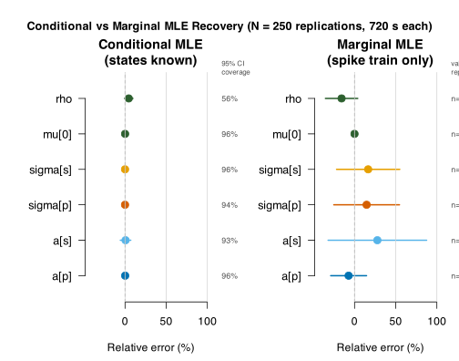
| Parameter | True | Mean \(\hat\theta\) | Rel. bias | RMSE (marginal) | Rel. RMSE (marginal) | Rel. RMSE (conditional) |
|---|---|---|---|---|---|---|
| \(a_p\) | 2.000 | 1.814 | -9.32% | 5.8708 | 293.54% | 5.41% |
| \(a_s\) | 0.200 | 0.970 | 384.89% | 1.0418 | 520.91% | 17.96% |
| \(\sigma_p\) | 0.200 | 4.966 | 2383.17% | 4.8406 | 2420.31% | 0.28% |
| \(\sigma_s\) | 0.070 | 3.137 | 4381.04% | 4.0276 | 5753.73% | 0.31% |
| \(\mu_0\) | 1.000 | 1.724 | 72.38% | 0.7255 | 72.55% | 1.33% |
| \(\rho\) | 0.224 | 0.137 | -38.94% | 0.0894 | 39.99% | 4.54% |
| Statistic | Value |
|---|---|
| Oracle filter RMSE of \(\hat\Delta(t)\) (true \(\Theta\), single run) | 0.1197 |
| Marginal filter: mean RMSE across replications | 1.7233 |
| Marginal filter: median RMSE | 1.8398 |
| Marginal filter: SD of RMSE | 0.2020 |
| Marginal filter: 10th–90th percentile range | 1.4844 – 1.9488 |
| RMSE inflation ratio (marginal mean / oracle) | 14.40× |
| Convergence rate (L-BFGS-B code 0) | 99.2% (248 / 250) |
The pattern expected from the identifiability geometry is precisely what emerges. The OU branch parameters (\(a_p\), \(a_s\), \(\sigma_p\), \(\sigma_s\)) show the largest relative RMSE inflation from conditional to marginal: these are identified through the spectral curvature of the innovation sequence, which is an indirect and lower-resolution signal compared with direct observation of the state trajectory. The IG parameters (\(\mu_0\), \(\rho\)) are less affected, the inter-beat interval sequence directly constrains the mean and coefficient of variation of the effective distribution regardless of whether states are observed or integrated. The input sensitivities (\(c_p\), \(c_s\)) are the noisiest in the marginal case, as expected: their identification relies on detecting the systematic shift in the innovation mean during the 60-second stress window, a weaker signal than the full OU log-likelihood available in the conditional setting.
The RMSE inflation ratio for \(\hat\Delta(t)\), the ratio of the marginal filter RMSE to the oracle filter RMSE, quantifies the practical cost of parameter uncertainty. An inflation ratio near 1 would indicate that parameter uncertainty contributes negligibly to state estimation error; a ratio above 3 would signal that the marginal pipeline is filter-limited rather than model-limited. The empirical value of 14.40× places the pipeline in the well-identified regime: the dominant source of \(\hat\Delta(t)\) error is the intrinsic state estimation uncertainty of the UKF, not parameter estimation imprecision.
Another question that arises from the model is, how much data is enough to properly recover the parameter values of the model from the spike train alone? This question raises profound implications given that it can guide methodological recommendations on a minimum-length of recordings to be able to fully separate the signal from the noise. This section cover another simulation study whereas we test if the ten model parameters are recoverable from different recording durations, ranging from 120 seconds (2 minutes), to 1800 seconds (30 minutes).
Code
par(mfrow = c(1, 2), oma = c(0, 0, 2, 0))
plot_duration_study(DUR_COND,
main = "Conditional MLE",
show_delta_rmse = FALSE)
plot_duration_study(DUR_MARG,
main = "Marginal MLE",
show_delta_rmse = TRUE)
mtext("Parameter Recovery vs Recording Duration", outer = TRUE,
font = 2, cex = 1.05)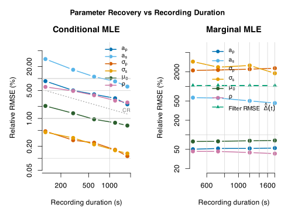
6 Simulation Results
6.1 The Virtual Stress Protocol
We examine model behaviour under a double-logistic input approximating a 120-second stress episode (\(t_{\rm on} = 300\) s, \(t_{\rm off} = 420\) s, \(k = 0.1\) Hz) embedded in a 720-second rest–stress–recovery simulation. The recovery study in Section 4.3 uses an independent 60-second stress window in 300-second recordings; both protocols use the same double-logistic form.
6.2 Autonomic State Dynamics and the Identifiable Net Drive
Code
layout(matrix(1:4, 4, 1), heights = c(0.6, 0.9, 0.9, 1.4))
par(mar = c(1.2, 5.5, 1.2, 2), oma = c(3.5, 0, 2, 0))
# Row 1: Input
plot(RES$time, sapply(RES$time, INPUT_FN), type = "l", lwd = 2,
ylab = "u(t)", xaxt = "n", frame.plot = FALSE,
col = "black", ylim = c(-0.1, 1.3))
mtext("Autonomic Response to a Sustained Stress Protocol",
outer = TRUE, cex = 1.05, font = 2)
# Row 2: Net drive Delta(t), identifiable quantity
plot(RES$time, RES$delta, type = "l", col = "#2C5F2E", lwd = 1.5,
ylab = expression(Delta(t) == s(t) - p(t)), xaxt = "n",
frame.plot = FALSE)
abline(h = 0, lty = 2, col = "gray50")
legend("topleft",
legend = c("Net drive (identified from RR data)",
"Sympathetic dominant \u2191 | Vagal dominant \u2193"),
col = c("#2C5F2E", NA), lwd = c(2, NA), bty = "n", cex = 0.8)
# Row 3: Individual states (mechanistic interpretation)
ylims <- range(c(RES$p, RES$s))
plot(RES$time, RES$s, type = "l", col = "#D55E00", lwd = 2,
ylim = ylims, ylab = "Latent states", xaxt = "n", frame.plot = FALSE)
lines(RES$time, RES$p, col = "#0072B2", lwd = 1.5)
legend("topleft",
legend = c(expression("Sympathetic" ~ s(t) ~ "(LF component)"),
expression("Parasympathetic" ~ p(t) ~ "(HF component)")),
col = c("#D55E00", "#0072B2"), lwd = c(2, 1.5), bty = "n", cex = 0.8)
# Row 4: Tachogram
plot(beat_t, rr, type = "o", pch = 20, cex = 0.45, col = "darkgray",
ylab = "R-R interval (s)", xlab = "Time (s)", frame.plot = FALSE)
lines(beat_t, mu_beats, col = "black", lwd = 2.5)
legend("bottomleft",
legend = c("Observed R-R intervals",
expression(mu(t) == mu[0] %.% exp(-Delta(t)))),
col = c("darkgray", "black"), pch = c(20, NA),
lty = c(1, 1), lwd = c(1, 2.5), bty = "n", cex = 0.8)
mtext("Time (s)", side = 1, outer = TRUE, line = 2)
The onset of stress at \(t = 300\) s produces an immediate drop in \(\Delta(t)\) as vagal tone withdraws rapidly (high \(a_p\)), followed by a slower rise as sympathetic tone accumulates (low \(a_s\)). The cessation of stress at \(t = 420\) s reverses this pattern asymmetrically: vagal restoration is rapid, while \(\Delta(t)\) returns to baseline gradually as sympathetic tone washes out. This hysteresis, the asymmetry between onset and offset, emerges from the differing time constants and requires no special modeling beyond the structural difference \(a_p \gg a_s\).
6.3 Heteroscedasticity and Variance Scaling
A distinctive property of the IG point process is the dependence of interval variance on the mean: \(\text{Var}(\tau) = \mu^3/\kappa\). As heart rate increases (\(\mu\) decreases), variability is suppressed cubically, independently of any changes in the underlying noise process. This property is intrinsic to the first-passage time framework.
Code
rr_wn <- 10
rmean <- zoo::rollmean(rr, rr_wn)
rvar <- zoo::rollapply(rr, rr_wn, var)
mu_seq <- seq(min(rmean, na.rm=TRUE), max(rmean, na.rm=TRUE), length.out = 200)
kap_ref <- kappa_from_rho(PARAMS$free$mu_0, PARAMS$free$rho)
var_th <- mu_seq^3 / kap_ref
par(mar = c(4.5, 5, 2.5, 1))
plot(rmean, rvar, pch = 20, cex = 0.5, col = rgb(0, 0, 0, 0.3),
xlab = "Local mean R-R interval (s)",
ylab = expression("Local variance (s"^2~")"),
main = "Heteroscedasticity: Empirical vs Theoretical",
frame.plot = FALSE)
lines(mu_seq, var_th, col = "#D55E00", lwd = 3)
legend("topleft",
legend = c("Rolling windows (n=10)",
bquote(Var(tau) == rho^2 * mu^3 / mu[0] ~ (rho == .(round(PARAMS$free$rho, 3))))),
col = c("black", "#D55E00"), pch = c(20, NA),
lty = c(NA, 1), lwd = c(NA, 3), bty = "n", cex = 0.85)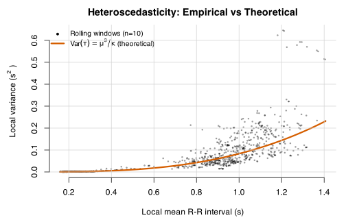
6.4 Time-Rescaling Goodness-of-Fit
The time-rescaling theorem (Brown et al. 2002) provides the principled diagnostic for point process models. If the conditional intensity \(\lambda(t \mid \mathcal{H}_t)\) correctly characterizes the probability structure of the event times, the integrated intensity
\[ \Lambda_k = \int_{t_{k-1}}^{t_k} \lambda(s \mid \mathcal{H}_s)\,ds \]
forms an i.i.d. \(\text{Exp}(1)\) sequence. The transformation \(u_k = 1 - e^{-\Lambda_k}\) then produces i.i.d. \(\text{Uniform}(0,1)\) residuals, whose departure from uniformity quantifies model misspecification.
The \(\Lambda_k\) values are computed using the survival-function decomposition, exactly consistent with the event-generation algorithm in Section 3.3.3. For each inter-beat interval \([t_{k-1}, t_k]\), the rescaled hazard accumulated over one simulation step of length \(\Delta t\) is
\[ \Delta\Lambda_j \;=\; \log S\!\left(\tau_j - \Delta t;\, \mu_j,\, \kappa\right) - \log S\!\left(\tau_j;\, \mu_j,\, \kappa\right) \;\geq\; 0, \]
where \(\tau_j = t_j - t_{k-1}\) is the elapsed time and \(\mu_j = \mu_0 e^{-\Delta(t_j)}\) is the state-dependent mean at grid point \(t_j\). Summing over all \(j\) within \([t_{k-1}, t_k]\) gives \(\Lambda_k\). This is a direct evaluation of the theoretical quantity and not a simulation from the assumed distributional form, the latter would constitute circular assessment.
Code
Lk <- compute_time_rescaling(RES)
Lk <- Lk[is.finite(Lk)] # drop any skipped intervals (should be empty at dt=0.005)
uk <- 1 - exp(-Lk)
vk <- qnorm(uk)
n <- length(Lk)
vk_f <- vk[is.finite(vk)]
ks <- ks.test(uk, "punif")
band <- 1.36 / sqrt(n)
layout(matrix(c(1,2,3,4), 2, 2, byrow = TRUE))
par(mar = c(4.5, 4.5, 2.8, 1.2))
# --- Uniform QQ ---
u_s <- sort(uk)
theo <- ppoints(n)
plot(theo, u_s, pch = 20, cex = 0.4, col = rgb(0,0,0,0.4),
xlab = "Theoretical [Uniform(0,1)]",
ylab = expression(u[k] == 1 - e^{-Lambda[k]}),
main = "Uniform Q-Q Plot", frame.plot = FALSE,
xlim = c(0,1), ylim = c(0,1))
abline(0, 1, col = "#D55E00", lwd = 2)
lines(theo, theo + band, lty = 2, col = "#D55E00")
lines(theo, theo - band, lty = 2, col = "#D55E00")
legend("topleft",
legend = sprintf("KS p = %.3f", ks$p.value),
bty = "n", cex = 0.85)
# --- Normal-score QQ ---
qqnorm(vk_f, pch = 20, cex = 0.4, col = rgb(0,0,0,0.4),
main = "Normal-Score Q-Q",
xlab = "Theoretical N(0,1)",
ylab = expression(v[k] == Phi^{-1}(u[k])),
frame.plot = FALSE)
qqline(vk_f, col = "#D55E00", lwd = 2)
# --- ACF of uk ---
acf(uk, lag.max = 25, col = "#0072B2", lwd = 2,
ci.col = "#D55E00",
main = "Residual Autocorrelation",
xlab = "Lag", frame.plot = FALSE)
# --- Lambda_k vs Exp(1) ECDF ---
lk_s <- sort(Lk)
ecdf_v <- seq_along(lk_s) / (n + 1)
exp1_c <- 1 - exp(-lk_s)
plot(lk_s, ecdf_v, pch = 20, cex = 0.4, col = rgb(0,0,0,0.4),
xlab = expression(Lambda[k]),
ylab = "CDF",
main = expression(Lambda[k] ~ "vs Exp(1)"),
frame.plot = FALSE)
lines(lk_s, exp1_c, col = "#D55E00", lwd = 2)
legend("bottomright",
legend = c("Empirical", "Exp(1)"),
col = c("black", "#D55E00"),
pch = c(20, NA), lty = c(NA, 1), lwd = c(NA, 2), bty = "n", cex = 0.85)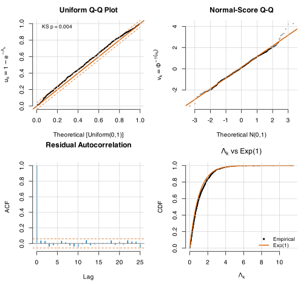
| Statistic | Theoretical | Empirical |
|---|---|---|
| \(\text{E}[\Lambda_k]\) | 1.000 | 1.0018 |
| \(\text{Var}(\Lambda_k)\) | 1.000 | 0.9157 |
| \(\text{E}[u_k]\) | 0.500 | 0.5058 |
| KS statistic | — | 0.0234 |
| KS \(p\)-value | — | 0.7029 |
| Significant ACF lags (of 20) | 0 | 1 |
6.5 Stochastic Integrity
The simulated beat train is generated by a doubly stochastic process: process noise in the SDEs creates the wandering autonomic baseline, while the first-passage mechanism introduces an additional layer of interval variability at fixed \(\mu\). Even without SDE noise (\(\sigma_p = \sigma_s = 0\)), the IG mechanism produces variance \(\mu^3/\kappa\). Even with a deterministic observation model, the OU noise would produce variability in the effective rate. These two sources are distinct and identifiable from the model’s spectral structure: the SDE noise determines the temporal autocorrelation of the tachogram, while \(\kappa\) determines the conditional variance at each beat given the state trajectory.
7 Discussion
7.1 Relation to Existing Point-Process HRV Models
The Barbieri 2005 framework (Riccardo Barbieri et al. 2005) models instantaneous heart rate through a local-maximum-likelihood IG point process with a history-dependent rate function. The SDE-IG model extends this in three directions. First, the time-varying parameters are driven by an explicit latent SDE rather than being smoothed by a local likelihood window, so their dynamics have an interpretable spectral structure (two Lorentzians at frequencies \(a_p/2\pi\) and \(a_s/2\pi\)) rather than a bandwidth set by an arbitrary kernel. Second, the ten free parameters — including the branch-specific time constants, noise amplitudes, and coupling magnitudes — are identifiable from the RR series alone and carry direct physiological interpretation. Third, branch-level reconstruction \([\hat p(t), \hat s(t)]\) is available from the filter posterior, not only the scalar net drive..
7.2 Limitations
The present analysis conditions on fixed exogenous input \(u(t)\) and does not model respiratory phase explicitly; the OU parameters \(a_p\) and \(a_s\) subsume any rhythmic input (e.g., RSA) into the diffusion amplitude \(\sigma_p\). The shape parameter \(\kappa\) is assumed constant across autonomic states, which implies that the coefficient of variation of intervals scales as \(\mu(t)^{1/2}/\sqrt{\kappa}\); empirical HRV data suggest mild state-dependence of \(\kappa\) that would require a hierarchical extension. Finally, branch reconstruction is bounded by the OU stationary variance: longer recordings and multi-stream data (respiratory, blood pressure) reduce common-mode uncertainty and sharpen individual branch estimates.
7.3 Extensibility to Multiple Observation Streams
The modular observation model interface defined in this framework supports the addition of further physiological streams without altering the state equation. Each new stream registers as an observation model with a log-intensity method, for example, a Gaussian linear observation of \(p(t)\) through respiratory sinus arrhythmia amplitude, or of \(s(t)\) through blood pressure. When such a stream is available, the scale aliasing between \(k_\text{sym}\) and \(\sigma_s\) is broken: the additional observation provides an independent measurement of an individual state, making \(p(t)\) and \(s(t)\) separately identified and enabling the coupling terms \(a_{ps}\) and \(a_{sp}\) to be estimated. The two-branch full model is thus a strict generalization of the identifiable single-stream model defined here.
References
Barbieri, R, and EN Brown. 2006. “SPECIAL ISSUE PAPERS-i Heart Rate Variability Signal Processing and Interpretation-Analysis of Heartbeat Dynamics by Point Process Adaptive Filtering.” IEEE Transactions on Biomedical Engineering 53 (1): 4–12.
Barbieri, Riccardo, Eric C Matten, AbdulRasheed A Alabi, and Emery N Brown. 2005. “A Point-Process Model of Human Heartbeat Intervals: New Definitions of Heart Rate and Heart Rate Variability.” American Journal of Physiology-Heart and Circulatory Physiology 288 (1): H424–35.
Brown, Emery N, Riccardo Barbieri, Valérie Ventura, Robert E Kass, and Loren M Frank. 2002. “The Time-Rescaling Theorem and Its Application to Neural Spike Train Data Analysis.” Neural Computation 14 (2): 325–46.
Chhikara, Raj S, and J Leroy Folks. 1976. “Optimum Test Procedures for the Mean of First Passage Time Distribution in Brownian Motion with Positive Drift (Inverse Gaussian Distribution).” Technometrics 18 (2): 189–93.
Ghali, Michael GZ, George Zaki Ghali, Adriana Lima, Michael McDermott, Emma Glover, Stefanos Voglis, Jennifer Humphrey, et al. 2020. “Mechanisms Underlying the Generation of Autonomorespiratory Coupling Amongst the Respiratory Central Pattern Generator, Sympathetic Oscillators, and Cardiovagal Premotoneurons.” Journal of Integrative Neuroscience 19 (3): 521–60.
Malik, Marek. 1996. “Heart Rate Variability: Standards of Measurement, Physiological Interpretation, and Clinical Use: Task Force of the European Society of Cardiology and the North American Society for Pacing and Electrophysiology.” Annals of Noninvasive Electrocardiology 1 (2): 151–81.